- Arduino
- 1.Placa Arduino
- 2.Simulación
- 3.IDE
- 4.Conectar placa al PC
- 5. Programar el Arduino
- 6. Programación
- 7. Botones
- Fuente de alimentación
- Luces
- LED RGB
- LED RGB
- Prácticas LED
- Semáforo de coches
- Práctica 4: semáforo de coches y peatones
- Práctica 5: Semáforo con pulsador
- Conexiones
- Código del programa
- LED
- Resistencias: ejemplo
- Resistencias: unidades
- Resistencias: diferencias
- Ejemplo identificación resistencia
- Resistencias: orientación
- Resistencias: medición
- Esquema
- Simulación
- Simulación: ejemplo
- Resistencias para LED
- Pantalla LCD
- 7 segments (4 dígitos)
- 7 segments (1 dígito)
- Conexión
- Esquema
- Diagrama de cableado
- Código
- Librerias
- El monitor serie
- Monitor serie
- Introducción
- Realizar la conexión
- Elegir puerto
- Motor paso a paso
- Esquema
- Diagrama de cableado
- Motor servo
- Protoboard
- Protoboard
- Tipos de protoboard
- Tipos de protoboard
- Zonas
- Canales centrales
- Tiras laterales
- Desventajas
- LED
- Conexión de pines
- Pinmode
- Escribir en pines
- digitalWrite(pin, value)
- Ejemplo
- analogWrite(pin, value)
- Ejemplo:
- Motores
- Controlador de motor: L293D
- Esquema
- Motor paso a paso
- Módulo de receptor IR
- Resumen
- Componentes necesarios
- Visualizar datos en el monitor
- Relé
- Usos
- Relé con motor de coche en
Arduino - Conexión
- Esquema
- Montaje real
- Código fuente
- Sensors
- Termistor
- Sensor humedad temperatura DHT11
- Interruptor de bola
- Componentes Requeridos
- Funcionamiento
- Conexión
- Esquema
- Diagrama de conexiones
- Código
- Comprobar funcionamiento
- Detectores IR vs fotocélulas
- ¿Qué podemos medir?
- Esquema de conexiones
- Diagrama de cableado
- Montaje
- Código
- Joystick analógico
- Pines del Joystick
- Pines del Joystick
- Pines del Joystick
- Datos
- Esquema
- Diagrama de cableado
- Código
- Sensor luz (fotocelula)
- Resumen
- Fotocélula
- Comportamiento
- Conexión
- Diagrama de cableado
- Código para leer valor de un LDR
- Código encender un LED cuando la luz es baja
- Código
- Sensor ultrasonico
- Componentes necesarios
- Características técnicas
- Principio básico del trabajo
- ¿Cómo calcula la distancia?
- Sensor
- Conexión
- Diagrama de cableado
- Montaje
- Código
- Tira de LEDs
- WS2812B
- Alimentación
- La librería FASTLED
- Conexión
- Cabecera
- Parpadeo (blink)
- Arcoiris
- LED Chaser
- Serial glow
- ESP8266 NodeMCU
- Projecte WLED
- Braç robòtic
Arduino
Arduino es una plataforma de hardware libre, basada en una placa con un microcontrolador y un entorno de desarrollo.
- El hardware libre es aquel cuyas especificaciones y diagramas esquemáticos son de acceso público.
- Cualquiera los puede consultar, mejorar y utilizar libremente.
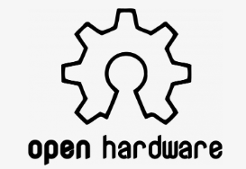
1.Placa Arduino
Arduino Uno es una placa de desarrollo que incorpora un microcontrolador. Este microcontrolador puede leer los datos de los sensores que se conectan, realizar algunas operaciones matemáticas y controlar los dispositivos a través de los pines de salida.
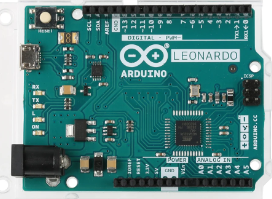
Componentes de la placa
- El conector USB, que nos permite conectar la placa al ordenador.
- Botón de reset, nos permite reiniciar la placa y por tanto el programa que esté grabado en ella.
- Conector de fuente de alimentación, por si quisiéramos alimentar la placa con un adaptador de corriente.
- Pines, que nos servirán para conectarlos a otros componentes electrónicos.
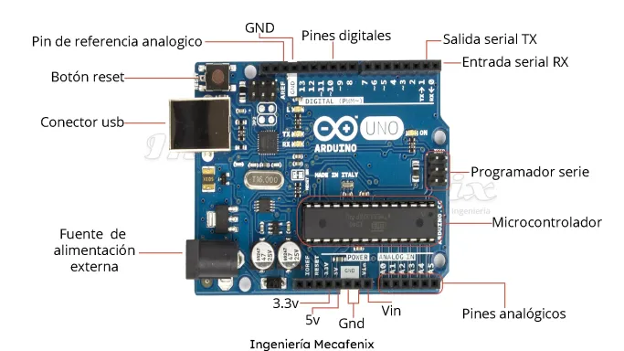
Microcontrolador
- Puede ser programado para recibir instrucciones.
- Usuarios pueden
programarla placa para que realice cualquier tarea que deseen - Controlar motores, iluminar LEDs, leer datos de sensores, etc.
El Arduino Uno utiliza un microcontrolador ATmega328P.
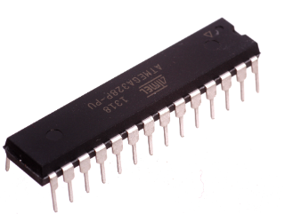
Características
| Características | Detalles |
|---|---|
| Microcontrolador 🕹️ | ATmega328P |
| Arquitectura 🏗️ | AVR (8 bits) |
| Frecuencia de Reloj ⏰ | 16 MHz |
| Memoria Flash 💾 | 32 kilobytes |
| Memoria RAM 🧠 | 2 kilobytes |
| Memoria EEPROM 📂 | 1 kilobyte |
| Entradas/Salidas Digitales 🧩 | Sí (pines digitales de E/S) |
| Entradas Analógicas 📏 | Sí (pines analógicos de E/S) |
| Comunicación Serial 🔄 | Sí (pines TX/RX para comunicación serial) |
Como podemos observar, la capacidad máxima para almacenar programas es de 32 kilobytes, por lo que éste será el tamaño máximo de los programas que podremos volcar sobre la placa.
Pines
Un "pin" se refiere a un punto de conexión en un dispositivo electrónico que permite la entrada o salida de una señal eléctrica.
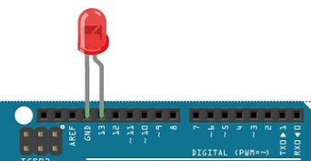
Pines de Alimentación
Vin(Voltage In): Este pin se utiliza para alimentar la placa con un voltaje externo cuando no se está utilizando el puerto USB. La tensión recomendada es de 7 a 12V.5V: Este pin proporciona una salida de 5 voltios cuando la placa está alimentada a través del puerto USB o del conector de alimentación externa.3.3V: Proporciona una salida de 3.3 voltios.Pines de Tierra (GND): Hay varios pines GND en la placa, que se utilizan como conexiones a tierra.
Pines de Entrada/Salida Digital (D2 a D13)
- Pueden usarse como entradas o salidas digitales.
- D2 a D13 también pueden utilizarse como salidas PWM (modulación de ancho de pulso) para controlar la intensidad de la señal.
Pines de entrada/salida analógicos
- Pines Analógicos (A0 a A5)
- Pines de entrada analógica que permiten leer señales analógicas
- Sensores de luz, temperatura, etc.
2.Simulación
Tinkercad Circuits es una plataforma en línea que te permite simular y diseñar circuitos electrónicos. Es parte de la suite de herramientas de Autodesk llamada Tinkercad, y es especialmente útil para aprender y experimentar con electrónica sin la necesidad de componentes físicos
https://www.youtube.com/watch?v=VU3fiibAnNY
3.IDE
- El Entorno de desarrollo integrado (IDE) de
Arduinoes el software de la plataformaArduino. - https://www.arduino.cc/en/Main/Software
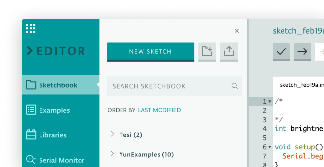
LED
La placa Arduino cuenta con un LED luminoso que puede ser controlado. Este LED está integrado en la propia placa.
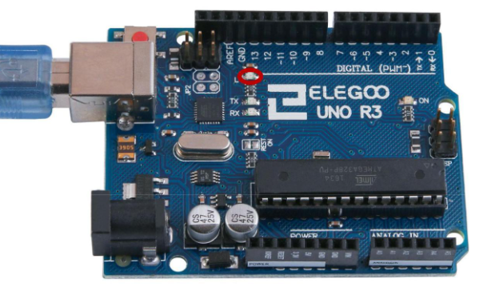
- Cuando la placa se conecta por mediode USB, el LED parpadea.
- Este parpadeo se debe a que las placas suelen ser enviadas con un programa preinstalado llamado "Blink".
Programas de ejemplo
El IDE de Arduino incluye una gran colección de programas de ejemplo para utilizar directamente. Esto incluye un ejemplo para hacer el parpadeo del LED.
Ejemplo programa Blink
Cargar el programa de 'Blink' que encontrarás en el sistema de menús del IDE bajo archivo > ejemplos > 01 conceptos básicos
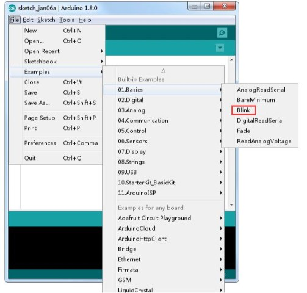
Crear nuevo programa
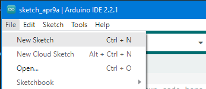
Programas de ejemplo
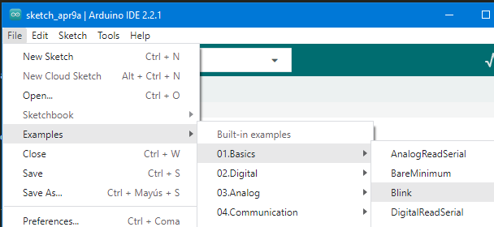
Blink
Cuando se abre la ventana de dibujo, agrandarla para que puedan ver el dibujo completo en la ventana.
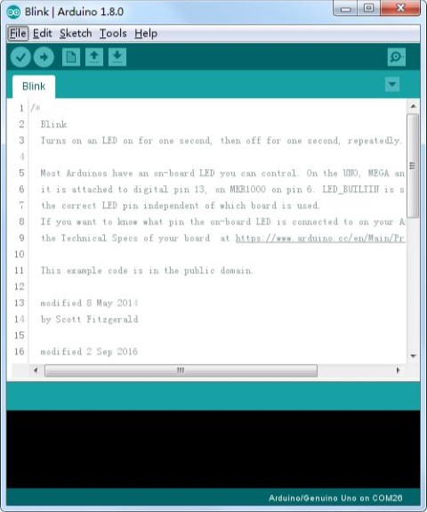
Los programas de ejemplo incluidos con el IDE deArduino son de 'sólo lectura'. Es decir, puedes subirlo a Arduino, pedo no se pueden guardar una vez modificados.
Guardar código en otro archivo
En el menú archivo en el IDE deArduino, seleccione Guardar como. y guarde el dibujo con el nombre parpadeo
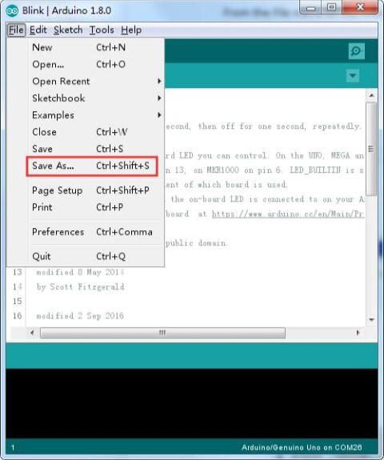
A continuación deberemos elegir una carpeta en la que guardar el programa.
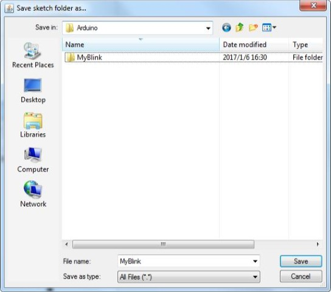
Abrir un archivo de programa
Para abrir un archivo que hemos guardado con anterioridad, podemos simplemente ir a archivo > abrir o también a archivo > abrir reciente.
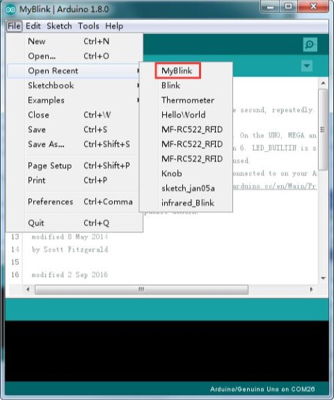
4.Conectar placa al PC
Conecte la placa deArduino al ordenador con el cable USB y compruebe que la Board Type y Puerto serie están ajustados correctamente.
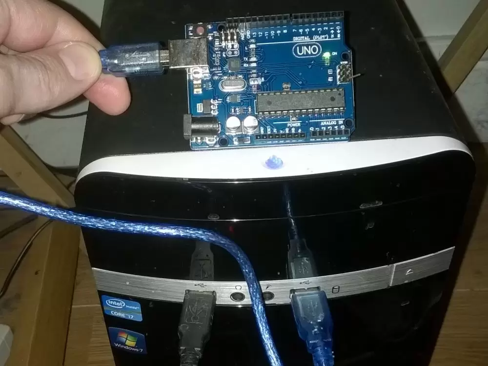
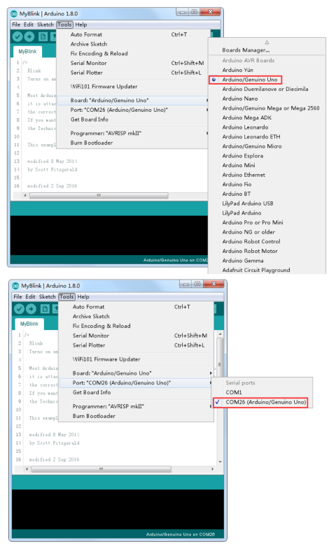
Conexión de la Placa Arduino al Ordenador
Para programar la Placa Arduino mediante el IDE de Arduino, es necesario establecer una conexión física entre la placa y el ordenador.
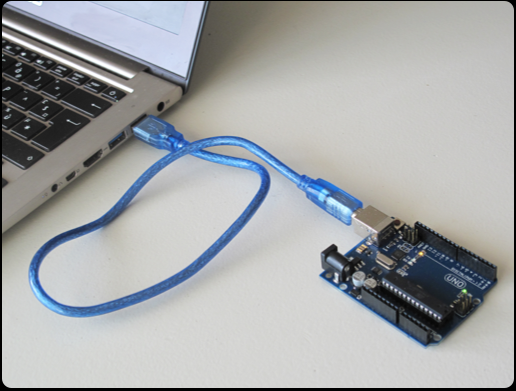
- Utilice un
cable USBpara conectar la Placa Arduino al puerto USB de su ordenador. - Abra el
IDE de Arduinoen su ordenador - Escriba o cargue el
programaque desea transferir a la placa. - Verifique que la Placa Arduino seleccionada en el IDE coincida con el modelo físico que está utilizando. Puede seleccionar la placa desde la pestaña
"Herramientas" > "Placa"en el IDE. - Seleccione el puerto COM al que está conectada la Placa Arduino. Esto también se encuentra en la pestaña
"Herramientas" > "Puerto"en el IDE. - Haga clic en el botón de carga ("Upload") en el IDE para transferir el programa a la Placa Arduino.
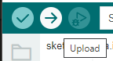
Puertos
- Seleccionar puerto interno al que está conectada la placa
- Conexión serie (puertos COM)
- Puerto serie (
COM) puede ser diferente, del tipo COM3 o COM4 en su ordenador. - IDE de
Arduinomostrará la configuración actual
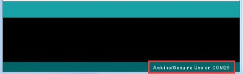
5. Programar el Arduino
Para que Arduino lo ejecute, necesitamos enviarle a través del cable USB el código que queremos que haga.
Para ello, debemos hacer clic en el botón subir. El segundo botón de la izquierda en la barra de herramientas.
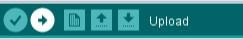
Compilación
- Al cargar el código, al observar el área de estado del IDE, se apreciará una barra de progreso junto con una serie de mensajes.
- Inicialmente, se mostrará el mensaje Compilando
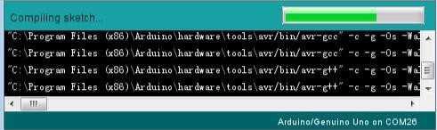
Subiendo código
Luego, el estado cambiará a 'Subiendo'. LEDs de la Arduino deberían empezar a parpadear, indicando la transferencia.
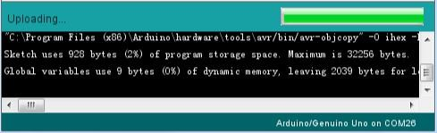
Código subido
- Cambio estado a
done uploading - El procesador de Arduino comienza a ejecutar el programa
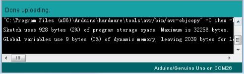
Errores
El otro mensaje nos dice que el programa está utilizando 928 bytes de 32.256 bytes disponibles. Después de la etapa de compilación Sketch... podría obtener el siguiente mensaje de error:
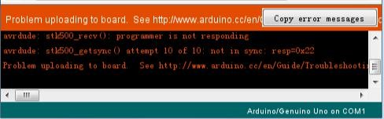
Puede significar que su Junta no está conectado a todos, o no se ha instalado los drivers (si es necesario) o que se ha seleccionado el puerto serial incorrecto.
6. Programación
Elementos de un programa
- Lenguaje basado en
C/C++ - Comentarios
- Funciones
setupyloop - Variables
Comentarios
- Explica funcionamiento del programa / notas para desarrolladores.
- Comentario de bloque: entre /* y */ en la parte superior del programa es un Comentario de bloque;
- Los comentarios de una sola línea comienzan con // y hasta el final de esa línea se considera un comentario.
Variables
La primera línea de código es:
Creamos una variable con un nombre y guardamos el número de pin al que el LED está conectado.Funciones principales
- Función
loop() - Función
setup()
Función setup()
- Función de configuración inicial
- Se ejecuta
- Al presionar el botón de
reset - Cada vez que la placa Arduino se reinicia
- Después de cargar un nuevo programa.
Función setup()
- Cada programa
Arduinodebe tener una función de setup (configuración) - Las
instruccionesse colocan entre las llaves { y }. - Al final de cada línea o instrucción
;
Ejemplo
- En este caso, el comando dentro de la función setup indica a la placa Arduino que el pin LED se usará como salida, según lo señala el comentario.
Retorno
Void
Función loop()
- Obligatorio
- Ejecución después de
setup() - Se repite indefinidamente
Explicación loop()
void loop() {
digitalWrite(led, HIGH); // Encienda el LED (alto es el nivel de voltaje)
delay(1000); // Espere un segundo
digitalWrite(led, LOW); // Apagar el LED por lo que la tensión baja
delay(1000); // Espere un segundo
}
Dentro de la función loop, los comandos en primer lugar activar el pin del LED (alto), girar a 'retraso' de 1000 milisegundos (1 segundo), entonces el pin LED apagado y pausa para otro segundo.
Cambiar la frecuencia de parpadeo
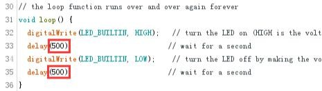
Ahora vas a que el LED parpadee más rápido. Como puede haber adivinado, la clave de esto radica en cambiar el parámetro () para el comando delay.
Variar retardo
Este período de retardo en milisegundos, así que si desea que el LED parpadee dos veces tan rápidamente, cambiar el valor de 1000 a 500. Esto entonces pausa durante medio segundo cada retraso en lugar de un segundo entero.
Sube otra vez el programa y verás que el LED comienza a parpadear más rápidamente.
7. Botones
En esta lección, aprenderemos a utilizar los botones con entradas digitales para encender y apagar un LED.
- Al presionar el primer botón se encenderá el LED
- Al pulsar el otro botón se apagará el LED.
Los interruptores son componentes muy simples. Al pulsar un botón, conectan dos contactos para que la electricidad fluya a través de ellos. Los interruptores de esta lección tienen cuatro terminales, lo cual puede resultar un poco confuso.
En realidad, solo hay dos conexiones eléctricas.
- Los terminales B y C están siempre conectados entre sí, al igual que los terminales A y D.
- Al pulsar el botón, se conectan todos los terminales.
- En realidad, dos de los terminales no son necesarios.
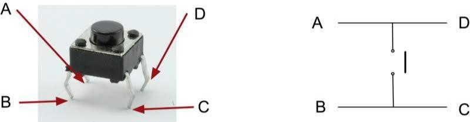
Esquema de conexión
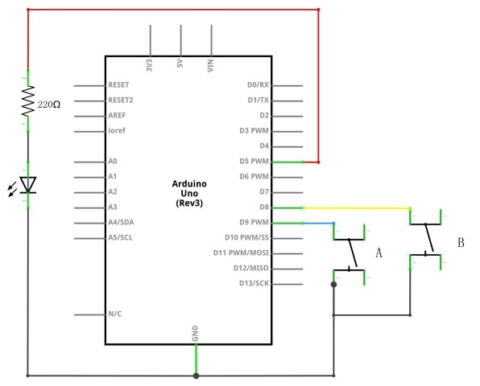
Diagrama de cableado
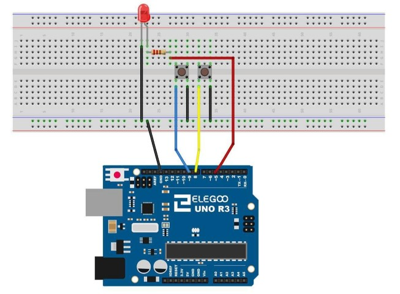
Las conexiones que vamos a tener que realizar son las siguientes
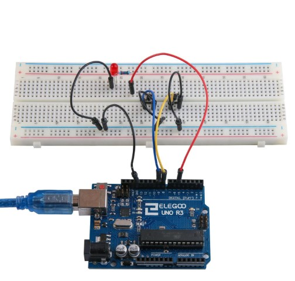
Aunque los cuerpos de los interruptores son cuadrados, los pasadores sobresalen de lados opuestos del interruptor.
Esto significa que los pines solo estarán correctamente separados cuando se coloquen adecuadamente en la placa de pruebas. Recuerda que el LED debe tener el cable negativo más corto en el lado izquierdo.
Explicación del código
- Al pulsar el botón izquierdo, se encenderá el LED.
- Al pulsar el botón derecho, se apagará.
La primera parte del proyecto define tres variables para las tres conexiones que vamos a utilizar.
ledPines el pin de salidapinBotonAse refiere al botón más cercano a la parte superior de la placa.buttonBpinal otro botón.
La función setup configura el pin 'ledPin' como salida, mientras que definimos las otras dos conexiones como entradas. Aquí es donde utilizamos INPUT_PULLUP como modo de pin:
- El modo INPUT_PULLUP indica que el pin debe ser utilizado como una entrada, pero cuando no hay nada conectado a la entrada, esta permanece en estado HIGH.
- En otras palabras, la entrada tiene un valor predeterminado de HIGH, a menos que se cambie a LOW al pulsar el botón. Esto permite que el botón controle la conexión a tierra y active la acción deseada.
Conexión a tierra
Los interruptores están conectados a tierra por una razón importante. Cuando se presiona un interruptor, este conecta la clavija de entrada a tierra, cambiando su estado de alto a bajo.
En la función setup, configuramos el pin 'ledPin' como salida y las otras dos conexiones como entradas utilizando el modo INPUT_PULLUP.
- INPUT_PULLUP hace que el pin funcione como una entrada, manteniendo su estado en HIGH cuando no hay nada conectado.
- Cuando se pulsa el botón, la entrada se conecta a tierra y cambia a LOW. Esto permite que el botón controle la conexión a tierra y active la acción deseada.
La lógica puede parecer un poco invertida, ya que la entrada está normalmente en alto y solo cambia a bajo cuando se presiona el botón. Manejaremos esto en la función loop.
Código completo
Fuente de alimentación
Este es un módulo de alimentación para protoboard. Se trata de una placa diseñada para suministrar energía a un breadboard (protoboard), facilitando la alimentación de circuitos electrónicos.
Entrada de alimentación:
- Conector Jack DC (a la derecha en la imagen), normalmente compatible con adaptadores de 7V a 12V.
- Puerto USB (a la izquierda), que permite alimentar el módulo con una fuente USB de 5V.
- Reguladores de voltaje: La placa tiene reguladores de tensión que permiten generar 3.3V y 5V a partir de la entrada de alimentación.
Salidas de alimentación:
- Se pueden ver varios pines etiquetados como 3.3V, 5V, GND, que permiten distribuir la energía al protoboard.
- También hay un interruptor para seleccionar entre 3.3V y 5V según las necesidades del circuito.
Indicador LED: El pequeño LED verde indica que la alimentación está activada.
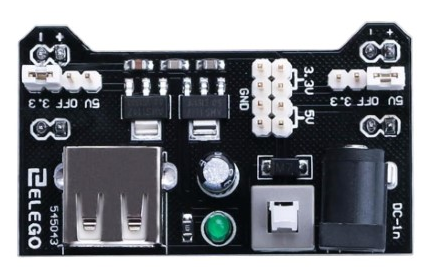
Especificaciones del producto
- Bloqueo Encendido interruptor LED Power indicador
- Entrada voltaje: 6.5-9v (CC) través 5.5mm x 2,1 mm enchufe
- Salida voltaje: 3.3V / 5v
- Máximo salida actual: 700 mA
- Independiente control riel salida. 0v, 3.3v, 5v a protoboard Salida pins principal para usos externos
- Tamaño: 2.1 en x 1.4 en
- USB dispositivo conector a bordo a power externos dispositivo
Configuración de voltaje de salida
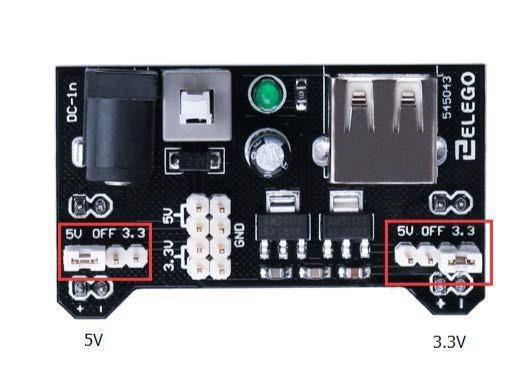
La izquierda y derecha de la tensión de salida puede configurarse independientemente. Para seleccionar la tensión de salida, mover el puente a los pines correspondientes. Nota: indicador de energía LED y los carriles de la energía de protoboard no se enciende si ambos puentes están en la posición "OFF".
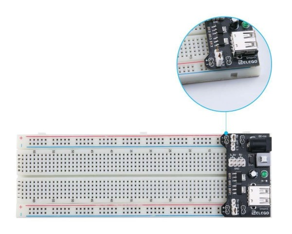
Nota IMPORTANTE:
Asegúrese de alinear el módulo correctamente en la placa de pruebas.
- El pin negativo (-) en el módulo se alinea con la línea azul (-) de la placa-
- El pin positivo (+) se alinea con la línea roja (+).
Luces
Els LEDs, els LCD i els displays de set segments són components electrònics que es poden controlar amb una placa Arduino per a mostrar informació o per a indicar l'estat d'un sistema. Cada un d'aquests dispositius té diferents característiques i funcions, i es poden utilitzar en diferents aplicacions.
- Els LEDs són diodes emissors de llum que es poden utilitzar per a indicar l'estat d'un sistema, per a il·luminar objectes o per a crear efectes de llum.
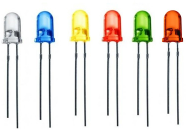
- Els displays LCD són pantalles de cristall líquid que es poden utilitzar per a mostrar text o gràfics. Aquests displays són útils en moltes aplicacions, com ara en sistemes de control de temperatura, temporitzadors, termostats, etc.
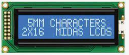
- Els displays de set segments són displays que mostren dígits o lletres utilitzant set segments de LEDs per a crear la forma desitjada. Aquests displays són utilitzats en moltes aplicacions, com ara rellotges digitals, termòmetres, indicadors de nivell, etc.
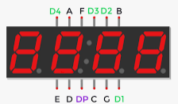
LED RGB
En este proyecto aprendremos a controlar la iluminación de un LED RGB con Arduino
Los LED RGB permiten iluminar con cualquier color, a través de 3 leds que contiene en su interior: uno rojo, otro verde y otro azul.
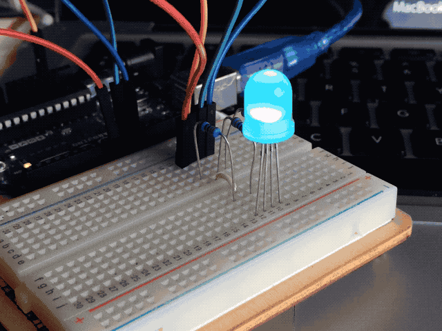
Tipos de LED RGB
- Existen 2 versiones: Ánodo común y cátodo común.
- Ánodo común utiliza 5V en el pin común, mientras que el cátodo común se conecta a tierra.
- Como con cualquier LED, tenemos que conectar algunas resistencias en línea (3 total) para limitar la corriente.
Componentes necesarios
| cantidad | componente |
|---|---|
| 1 | placa Arduino |
| 1 | protoboard |
| 4 | cables jumper |
| 1 | LED RGB |
| 3 | resistencias de 220 ohmios |
LED RGB
A primera vista, LEDs RGB (rojo, verde y azul) sólo parecen un LED. Sin embargo, dentro del paquete del LED generalmente, hay realmente tres LEDs, uno rojo, uno verde y sí, uno azul. Controlando el brillo de cada uno de los LEDs individuales, podemos mezclar prácticamente cualquier color.
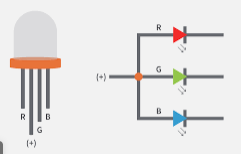
Pines
El LED RGB tiene cuatro pines. Hay un cable a la conexión positiva de cada uno de los LEDs individuales dentro del paquete y un patilla única que está conectado a los tres lados negativos de los LEDs.
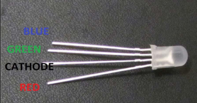
Cada pin separado de color verde o azul o de rojo se llama ánodo.
Color
Los colores los conseguiremos mezclando diferentes cantidades de cada color primario.
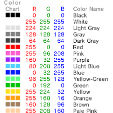
La mezcla creará la sensación del color elegido. Podemos controlar el brillo de cada una de las partes de rojas, verdes y azules del LED por separado, lo que es posible mezclar cualquier color.
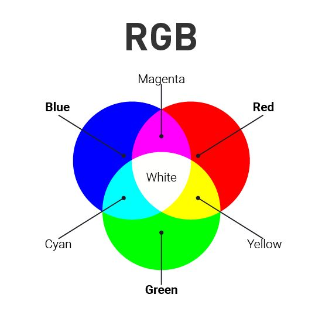
Ejemplos
- Si establece el brillo de todos los tres LEDs al ser el mismo, el color general de la luz será blanco.
- Si apagamos el LED azul, para que sólo los LEDs rojo y verdes son el mismo brillo, la luz aparecerá amarillo.
¿Cómo consigo el color negro?
El color Negro no es tanto un color como una ausencia de luz. Por lo tanto, lo más cercano que podemos llegar a negro con el LED es apagar los tres colores, poniendo sus valores a 0.
Teoría (PWM)
- Arduino tiene una función analogWrite que se puede utilizar con pines marcados con un ~ a la salida de una cantidad variable de energía los LEDs apropiados.
- La forma de dar más o menos potencia a cada color es utilizando una señal del tipo
PWM. - La modulación de ancho de pulso (PWM) es una técnica para el control de potencia. La utilizamos aquí para controlar el brillo de cada uno de los LEDs.
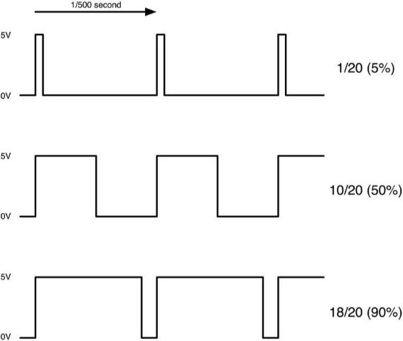
Ciclo de trabajo
Aproximadamente cada 1/500 de segundo, la salida PWM producirá un pulso. La duración de este pulso es controlada por la función 'analogWrite'. Así:
analogWrite(0)no producirá ningún pulso.analogWrite(255)producirá un pulso que dura todo el camino hasta el pulso siguiente vencimiento, para que la salida es en realidad todo el tiempo.
Si especificamos un valor en el analogWrite que está en algún lugar entre 0 y 255, se producir un pulso.
- Si el pulso de salida es alto para el 5% del tiempo, entonces lo que nosotros estamos manejando sólo recibirá el 5% de potencia.
- Si la salida es 5V para el 90% del tiempo, la carga recibirá el 90% .
Los LED se encenderán y apagarán en esos periodos, pero nosotros percibiremos que el brillo del LED cambia.
Esquema
El esquema eléctrico que seguiremos es el siguente:
- Cada patilla de un color debe conectarse a una salida digital etiquetada como
PWM - La patilla común, irá conectada a un pin de tierra, etiquetado como
GND
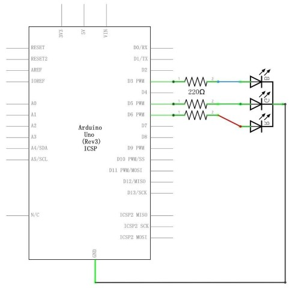
Conexión
- El cátodo o conexión común es el segundo pin, que también es el más largo de las cuatro patas y se conectarán a la tierra (GND).
- Cada LED requiere su propia resistencia de 220 Ω para prevenir demasiada corriente que fluye a través de él.
- Los 3 pines de color (uno rojo, uno verde y uno azul) están conectados a los pines de salida UNO con estas resistencias.
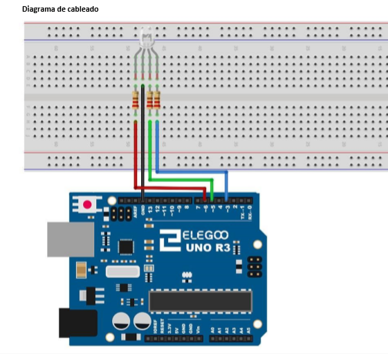
Una vez conectado, debería quedar de la siguiente forma:
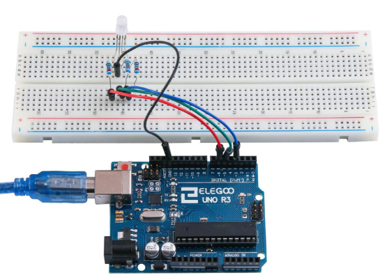
Código programa 1
| pruebaLEDRGB.ino | |
|---|---|
Una vez probado, puedes intentar estos ejercicios:
- Combinar varios valores para conseguir colores diferentes
- Crear un semáforo utilizando delays y cambiando los valores para producir las luces roja, verde y amarilla.
Código programa 2
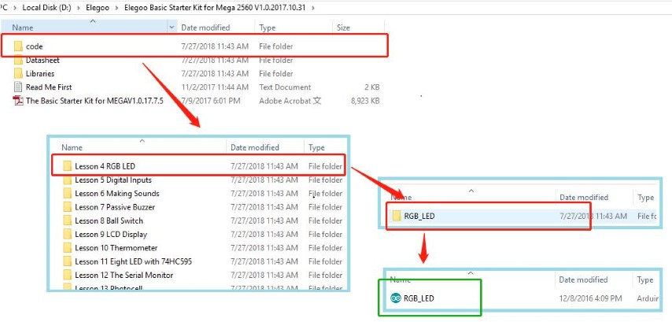
Primero especificamos a que pines de Arduino he conectado cada LED.
// Define Pins
// Se definen los pines
#define BLUE 3 // Se asigna el nombre 'BLUE' al pin 3
#define GREEN 5 // Se asigna el nombre 'GREEN' al pin 5
#define RED 6 // Se asigna el nombre 'RED' al pin 6
En el setup, declaramos estos pines como salidas (OUTPUT) para poder enviar corriente hacia los LED.
void setup()
{
pinMode(RED, OUTPUT);
pinMode(GREEN, OUTPUT);
pinMode(BLUE,OUTPUT);
digitalWrite(RED, HIGH);
digitalWrite(GREEN, LOW);
digitalWrite(BLUE, LOW);
}
Antes de echar un vistazo a la función loop, veamos la última función en el proyecto.
Las variables de definición:
redValue = 255; // choose a value between 1 and 255 to change the color.
greenValue = 0;
blueValue = 0;
Esta función tiene tres argumentos, uno para el brillo de los LEDs rojos, verdes y azules. En cada caso de que el número será en el rango 0 a 255, donde 0 significa apagado y 255 significa brillo máximo. La función entonces llama 'analogWrite' para ajustar el brillo de cada LED.
Si nos fijamos en la función loop se puede ver que ajuste la cantidad de luz roja, verde y azul que queremos mostrar y luego una pausa por un segundo antes de pasar al siguiente color.
Prácticas LED
Vamos a aprender a utilizar luces LED, botones y resistencias utilizandoArduino.
Para ello, diseñaréis, programaréis y simularéis circuitos variados utilizando principalmente resistencias, LEDs y botones.
Práctica 1: Parpadeo LED integrado
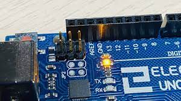
Práctica 2: Parpadeo LED Rojo externo
Parpadeo de un LED Rojo conectado aArduino.
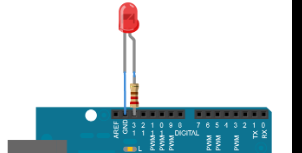
Práctica 3: semáforo simple
Semáforo de coches
En esta práctica programaremos un semáforo con tres leds: rojo, amarillo y verde, simulando un semáforo.
Montaje
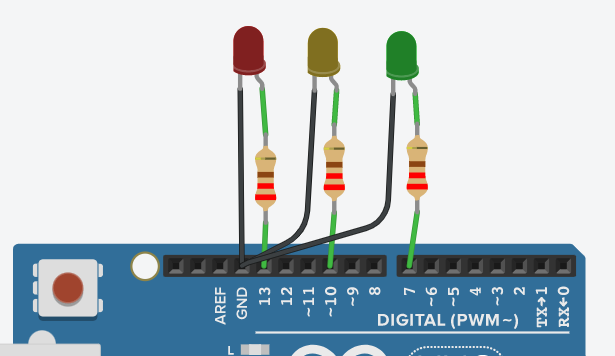
Código
// ``C++`` code
//
void setup()
{
pinMode(13, OUTPUT);
pinMode(10, OUTPUT);
pinMode(7, OUTPUT);
}
void loop()
{
//Encender verde
digitalWrite(7, HIGH);
digitalWrite(10, LOW);
digitalWrite(13, LOW);
delay(5000);
//Encender amarillo
digitalWrite(7, LOW);
digitalWrite(10, HIGH);
digitalWrite(13, LOW);
delay(2000);
//Encender rojo
digitalWrite(7, LOW);
digitalWrite(10, LOW);
digitalWrite(13, HIGH);
delay(5000);
}
Práctica 4: semáforo de coches y peatones
Como ampliación, en este montaje controlaremos dos semáforos. Uno de peatones, y uno de coches.
- Cuando el de coches esté en rojo, el de peatones estará en verde, y viceversa
- El semáforo de coches pasa de verde a rojo pasando por el amarillo, y del rojo al verde directamente.
Montaje
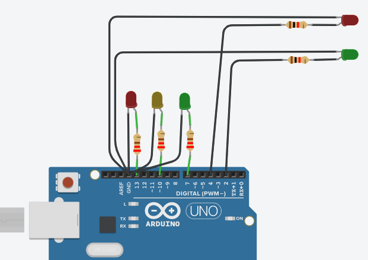
Práctica 5: Semáforo con pulsador
En este ejemplo, el semáforo estará siempre en rojo, a no ser que pulsemos el botón. En ese caso, el semáforo pasará a verde, luego a ámbar y, por último, a rojo.
Conexiones
Elegiremos 3 pines a los que colocar los LED, en mi caso 8, 9 y 10. Los 3 LED tendrán una resistencia en el camino, para protegerlos.
Tanto los LED como el pulsador se conectaran por la otra patilla hacia la entrada GND (tierra).
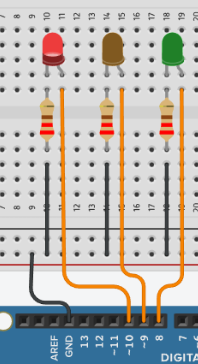
El pulsador irá conectado a otro pin, en mi caso he elegido el 2.
Código del programa
int ledVerde = 8;
int ledAmarillo = 9;
int ledRojo = 10;
int boton = 2;
void setup()
{
pinMode(ledVerde, OUTPUT);
pinMode(ledAmarillo, OUTPUT);
pinMode(ledRojo, OUTPUT);
pinMode(boton, INPUT_PULLUP);
digitalWrite(ledRojo, HIGH);
}
void loop()
{
if (digitalRead(boton) == LOW){
delay(1000);
//Encender verde
digitalWrite(ledVerde, HIGH);
digitalWrite(ledAmarillo, LOW);
digitalWrite(ledRojo, LOW);
delay(5000);
//Encender amarillo
digitalWrite(ledVerde, LOW);
digitalWrite(ledAmarillo, HIGH);
digitalWrite(ledRojo, LOW);
delay(2000);
//Encender rojo
digitalWrite(ledVerde, LOW);
digitalWrite(ledAmarillo, LOW);
digitalWrite(ledRojo, HIGH);
delay(5000);
}
}
Una vez que la simulación sea correcta, pasaremos a implementar el circuito físicamente y programarlo.
LED
Los LED son diodos que emiten luz al pasar una corriente eléctrica determinada a través de ellos.
¿Cómo se conecta?
Directamente no se puede conectar un LED a una batería o fuente de tensión porque:
1) El LED tiene un polo positivo y un negativo y no se encenderá si se conectan mal. 2) Un LED con una resistencia para limitar la corriente que circula a través de él.
Ejemplo de LED
Advertencia
Si no utilizas un resistencia con un LED, entonces se puede quemar casi de inmediato, como demasiada corriente fluirá a través, calienta y destruye al 'cruce' donde se produce la luz. Hay dos maneras de saber cual es el positivo del LED y que la negativa. En primer lugar, el positivo es más largo.
En segundo lugar, donde la pata del negativo entra en el cuerpo del LED, hay un borde plano para el caso del LED.
La patilla más larga es el positivo.
Resistencias
Como su nombre lo indica, resistencias de resisten el flujo de electricidad. Cuanto mayor sea el valor de la resistencia, resiste más y la menos corriente fluirá a través de él. Vamos a usar esto para controlar Cuánta electricidad fluye a través del LED y por lo tanto, como claramente brilla.
Resistencias: ejemplo
Resistencias: unidades
- La unidad de resistencia se denomina Ohm, que se abrevia generalmente a Ω la letra griega Omega.
- 1 Ohm es un valor bajo
- Valores de resistencias en kΩ (1.000 Ω) y MΩ (1.000.000 Ω). (kiloohmios y megaohmios).
Resistencias: diferencias
Estas resistencias todas se ven iguales, excepto que tienen rayas de colores diferentes en ellos. Estas rayas decirte el valor de la resistencia.
El código de color resistor tiene tres franjas de colores y luego una banda de oro en un extremo.
Ejemplo identificación resistencia
Resistencias: orientación
A diferencia de los LED, resistencias no tienen un cable positivo y negativo. Se puede conectar de cualquier manera alrededor.
Resistencias: medición
Si desconocemos el valor de una resistencia, también podemos medir su valor utilizando un multímetro.
Esquema
Simulación
La placa de desarrolloArduino UNO es una conveniente fuente de 5 voltios, que vamos a utilizar para alimentar el LED y la resistencia. No necesita hacer nada con su UNO, salvo que lo conecte un cable USB.
Simulación: ejemplo
Resistencias para LED
- Con la resistencia de
220 Ω, el LED debe ser bastante brillante. - Si cambia la resistencia
220 Ωpara la resistencia de1 kΩ, brillará menos. - Por último, con el resistor de
10 kΩen su lugar, el LED será casi invisible.
Pantalla LCD
La pantalla tiene una retroiluminación de LED y puede mostrar dos filas con hasta 16 caracteres en cada fila.
Circuito integrado LCD1602
La pantalla está incrustada en un circuito integrado que la controla, llamado LCD1602. Este circuito integrado se encarga de controlar la visualización de los caracteres en la pantalla, así como la retroiluminación LED.
Pines
VSSUn pin que se conecta a tierraVDDUn pin que se conecta a un + 5V fuente de alimentaciónVOajusta el contraste.RSUn registro seleccione pin que controla donde en memoria de la pantalla LCD datos de escritura. Usted puede seleccionar el registro de datos, que es lo que pasa en la pantalla, o un registro de instrucción, que es donde busca controlador de LCD para obtener instrucciones sobre qué hacer.R/W: Pin A lectura y escritura que selecciona el modo de lectura o escritura a modo de E:, Permitiendo a un perno con energía de bajo nivel, módulo causas la LDC para ejecutar instrucciones.D0-D7son los pines para escribir y leer datos.A y Kcontrolan de la retroiluminación LED de los pernos
Esquema de conexión
Diagrama de cableado
La pantalla LCD necesita:
- 6 pines digitales de datos de
Arduino - Coneciones de 5V y GND.
Potenciómetro
El potenciómetro se utiliza para controlar el contraste de la pantalla. En ocasiones se ajusta con un pequeño destornillador. El potenciómetro utilizado será de 10 KOhm
Bibliotecas o librerías de funciones
Antes de ejecutar este código, asegúrate de haber instalado la biblioteca LiquidCrystal o de volver a instalarla si es necesario. De lo contrario, el código no funcionará.
Lo primero que nota en el dibujo es la línea:
Esta línea le indica al entorno de desarrollo de Arduino que queremos utilizar la biblioteca de cristal líquido. En este caso, la biblioteca LiquidCrystal proporciona las funciones necesarias para controlar una pantalla LCD.
Al incluir esta línea al principio de nuestro código, podemos utilizar estas funciones en nuestro programa sin necesidad de definirlas manualmente.
A continuación tenemos la línea que teníamos que modificar. Esto define qué pines deArduino son para conectarse a que pines de la pantalla.
Después de subir este código, asegúrese de que se enciende la retroiluminación y ajustar el potenciómetro de toda la manera alrededor hasta que aparezca el mensaje de texto
En la función de setup, tenemos dos comandos:
La primera cuenta la librería de cristal líquido cuántas columnas y filas tiene la pantalla. La segunda línea muestra el mensaje que vemos en la primera línea de la pantalla.
En la función de 'loop', aso tienen dos comandos:
El primero establece la posición del cursor (donde aparecerá el siguiente texto) columna 0 y fila 1. Los números de columna y fila comienzan en 0 en lugar de 1.
La segunda línea muestra el número de milisegundos desde que se restableció elArduino.
// include the library code:
#include <LiquidCrystal.h>
// initialize the library with the numbers of the interface pins
LiquidCrystal lcd(7, 8, 9, 10, 11, 12);
void setup() {
// set up the LCD's number of columns and rows:
lcd.begin(16, 2);
// Print a message to the LCD.
lcd.print("Hello, World!");
}
void loop() {
// set the cursor to column 0, line 1
// (note: line 1 is the second row, since counting begins with 0):
lcd.setCursor(0, 1);
// print the number of seconds since reset:
lcd.print(millis() / 1000);
}
7 segments (4 dígitos)
En esta lección, aprendremos a utilizar una pantalla de 7 segmentos de 4 dígitos. Tenemos que tener en cuenta que:
- Si la pantalla es ánodo común, el pin común del ánodo se conecta a la fuente de energía
- Si es de cátodo común, el pin común del cátodo se conecta a la tierra.
Cuando se utilizan 4 dígitos de 7 segmentos, el ánodo común o pin de cátodo común se utiliza para controlar qué dígito aparece. A pesar de que hay sólo un dígito de trabajo, el principio de persistencia de la visión le permite ver todos los números de muestra ya que cada uno es tan rápida que apenas notará los intervalos de la velocidad de exploración.
Componentes necesarios
| Cantidad | Componente |
|---|---|
| 1 | Elegoo Uno R3 |
| 1 | protoboard |
| 1 | 74HC595 IC |
| 1 | display de 4 dígitos de 7 segmentos |
| 4 | Resistencias de 220 ohm |
| 1 | M-M cables (cables de puente de macho a macho) |
Muestra de 4 dígitos de 7 segmentos
Diagrama de cableado
Cada dígito tiene 7 segmentos (A a G) y un punto decimal (D1 a D4).
Montaje
7 segments (1 dígito)
Un seven segments es un dispositivo de visualización formado por siete diodos LED dispuestos en forma de número 8.
Se utilizan para mostrar números, letras y caracteres especiales. Se usan en una variedad de dispositivos electrónicos, como relojes digitales, calculadoras, contadores, temporizadores, etc.
Combinaciones
Estas son las combinaciones que podemos hacer para mostrar los distintos números:
Componentes necesarios
| cantidad | componente |
|---|---|
| 1 | placaArduino |
| 1 | protoboard |
| 1 | circuito integrado 74HC595 |
| 1 | Pantalla 7 segments |
| 8 | resistencias de 220 ohm |
| 1 | M-M cables (cables de puente de macho a macho) |
Display de siete segmentos
Abajo está el diagrama de pines de siete segmentos
Los números del 0 al 9 se representan en un display de siete segmentos mediante la activación de segmentos individuales. Cada LED, en caso de recibit un 1, se ilumina. Combinando todos los LED podemos hacer todos los números
| dp | a b c d e f g |
|---|---|
| 0 | 0 1 1 1 1 1 1 0 |
| 1 | 0 0 1 1 0 0 0 0 |
| 2 | 0 1 1 0 1 1 0 1 |
| 3 | 0 1 1 1 1 0 0 1 |
| 4 | 0 0 1 1 0 0 1 1 |
| 5 | 0 1 0 1 1 0 1 1 |
| 6 | 0 1 0 1 1 1 1 1 |
| 7 | 0 1 1 1 0 0 0 0 |
| 8 | 0 1 1 1 1 1 1 1 |
| 9 | 0 1 1 1 1 0 1 1 |
Registro de desplazamiento
Vamos a utilizar un circuito integrado para simplificar el control del seven segments, en concreto se trata de un registro de desplazamiento 74HC595 para controlar la visualización de un seven segments.
El 74HC595 es un registro de desplazamiento de 8 bits que se utiliza comúnmente para controlar múltiples dispositivos, como un display de siete segmentos. Permite la conexión de varios dispositivos en cadena, simplificando la conexión a microcontroladores u otros circuitos de control. El registro de desplazamiento toma datos de entrada serie y los desplaza a través de sus salidas de forma paralela, lo que lo hace ideal para controlar múltiples segmentos de un display de siete segmentos de manera eficiente y con menos pines de control.
Conexión
Diagrama de cableado
La siguiente tabla muestra la tabla de correspondencias pantalla de siete segmentos 74HC595 pin
Paso uno: conexión 74HC595
En primer lugar, el cableado está conectado a la alimentación y tierra:
- VCC (pin 16) y Señor (pin 10) conectado a 5V
- GND (pin 8) y OE (pin 13) a tierra
Paso uno: conexión 74HC595
Pin conexión DS, ST_CP y SH_CP:
- DS (pin 14) conectado al pin de tablero UNO R3 2 (la cifra por debajo de la línea amarilla)
- ST_CP (pin 12, perno de pestillo) conectado al pin de tablero UNO R3 3 (línea azul de la figura abajo)
- SH_CP (pin 11, pin de reloj) conectado al pin de tablero UNO R3 4 (figura debajo de la línea blanca)
Paso 2: conectar el display de siete segmentos
El display de siete segmentos 3, 8 pin a UNO R3 Junta GND (este ejemplo utiliza el cátodo común, si se utiliza el ánodo común, por favor conecte el 3, 8 pines para tablero UNO R3 + 5V)
Según la tabla anterior, conecte el 74HC595 Q0 ~ Q7 a siete segmentos pantalla pin correspondiente (A ~ G y DP) y luego cada pie en una resistencia de 220 ohmios en serie.
Código
int tDelay = 100;
int latchPin = 11; // (11) ST_CP [RCK] on 74HC595
int clockPin = 9; // (9) SH_CP [SCK] on 74HC595
int dataPin = 12; // (12) DS [S1] on 74HC595
byte leds = 0;
void updateShiftRegister()
{
digitalWrite(latchPin, LOW);
shiftOut(dataPin, clockPin, LSBFIRST, leds);
digitalWrite(latchPin, HIGH);
}
void setup()
{
pinMode(latchPin, OUTPUT);
pinMode(dataPin, OUTPUT);
pinMode(clockPin, OUTPUT);
}
void loop()
{
leds = 0;
updateShiftRegister();
delay(tDelay);
for (int i = 0; i < 8; i++)
{
bitSet(leds, i);
updateShiftRegister();
delay(tDelay);
}
}
LED con 74HC595
Veremos cómo utilizar ocho LEDs rojos grandes con un Arduino UNO sin necesidad de sacrificar las 8 salidas disponibles.
Aunque podrías conectar ocho LEDs con una resistencia a pines del Arduino UNO, rápidamente te quedarías sin pines en tu placa si ya tienes varios dispositivos conectados. Si no tienes muchas cosas conectadas al UNO, está bien hacerlo, pero a menudo queremos incorporar botones, sensores, servos, etc. y antes de darte cuenta, te quedas sin pines disponibles.
Por lo tanto, en lugar de hacer eso, usarás un chip llamado 74HC595, que es un convertidor serial a paralelo. Este chip cuenta con ocho salidas (perfecto) y tres entradas que se utilizan para cargar datos poco a poco.
Este chip hace un poco más lento para los LEDs (sólo se puede cambiar el LED unos 500.000 veces por segundo en lugar de 8.000.000 por segundo) pero todavía es muy rápido, forma más rápido que los seres humanos puede detectar, asíque vale!
Componente necesario:
- (1) x Elegoo Uno R3
- Protoboard
- leds
- resistencias de 220 ohmios
- IC x 74hc595
- M M cables (cables de puente de macho a macho)
74HC595 Registro de desplazamiento
El registro de desplazamiento es un tipo de chip que tiene lo que puede considerarse como posiciones de memoria ocho, cada uno de ellos puede ser un 1 o un 0. Para definir cada uno de estos valores encendido o apagado, alimentamos en los datos mediante los pines del chip 'Datos' y 'El reloj'.
El pin de reloj debe recibir ocho pulsos. En cada pulso, si el pin de datos es alto, entonces un 1 obtiene empujado en el registro de desplazamiento; de lo contrario, un 0. Cuando se han recibido los ocho impulsos, permitiendo el pin 'Pestillo' copia esos ocho valores en el registro de cierre. Esto es necesario; de lo contrario, parpadean mal los LEDs como se carga los datos en el registro de desplazamiento.
El chip también tiene un pin de salida activado (OE), que se utiliza para activar o desactivar las salidas a la vez. Podría conectar esto a un pin PWM capaz UNO y usar 'analogWrite' para controlar el brillo de los LEDs. Este pin es baja activa, por lo que nos ate a la tierra GND.
Conexión
Esquema
Diagrama de cableado
Ya que tenemos ocho LEDs y ocho resistencias para conectar, hay realmente muy pocas conexiones a realizar.
Es probablemente más fácil poner el chip 74HC595 en primer lugar, como casi todo lo demás se conecta a él. Ponerlo de modo que la muesca en forma de U poco hacia la parte superior de la placa.
Pin 1 del chip es a la izquierda de esta muesca. Digital 12 del UNO va al pin #14 del registro de desplazamiento Digital 11 del UNO va al pin #12 del registro de desplazamiento
9 digital a partir de la UNO va al pin #11 del registro de desplazamiento
Todos sino una de las salidas de la IC está en el lado izquierdo del chip. Por lo tanto, para facilitar la conexión, es donde están los LEDs, también.
Después de la viruta, poner las resistencias en su lugar. Usted necesita tener cuidado de que ninguno de los cables de las resistencias tocan. Usted debe comprobar esto otra vez antes de conectar la energía a la ONU. Si le resulta difícil organizar las resistencias sin sus conductores tocando, entonces ayuda a acortar los cables que están mintiendo más cercanos a la superficie de la placa.
A continuación, coloque los LEDs en la protoboard. Cuanto más positivo lleva LED debe ser hacia el chip, de cualquier lado de la placa están en.
Conecte los conductores del puente como se muestra arriba. No olvide que va desde el pin 8 del IC a la columna GND de la placa.
Carga el bosquejo aparece un poco más adelante y probar. Cada LED debe encenderse alternadamente hasta que todos los LEDs están encendidos y luego se apagara y el ciclo se repite.
Código
Después de cableado, por favor, abra el programa en el código de carpeta lección 24 8 LED con 74HC595 y haga clic en UPLOAD para cargar el programa. Ver Lección 2 para más detalles sobre el programa cargar si hay algún error.
Lo primero que hacemos es definir los tres pernos que vamos a utilizar. Estos son los UNO salidas digitales que se conectarán a los pines de datos, reloj y cierre de los 74HC595.
A continuación, se define una variable llamada 'leds'. Esto se utiliza para sostener el patrón de que LED actualmente es activado o desactivados. Datos de tipo 'byte' representan números de ocho bits. Cada bit puede estar encendido o apagado, esto es perfecto para realizar un seguimiento de cuáles de nuestros ocho LEDs son on u off.
leds de byte = 0;
La función de setup sólo establece los tres pernos que estamos utilizando para ser de salidas digitales.
La función loop inicialmente apaga todos los LEDs, al darle a los variable 'leds' el valor 0. A continuación, llama 'updateShiftRegister' que enviará el patrón de 'leds' para el registro de desplazamiento para que el LED se apague. Se tratará con 'updateShiftRegister' funcionamiento más adelante.
La función loop hace una pausa de medio segundo y entonces empieza a contar de 0 a 7 usando el bucle 'for' y la variable 'i'. Cada vez utiliza la función deArduino 'verdadera' para establecer el bit que controla ese LED en la variable 'leds'. A continuación también llama 'updateShiftRegister' para que los leds actualizar para reflejar lo que está en la variable 'leds'.
Hay entonces medio segundo de retraso antes de 'i' se incrementa y se ilumina el LED próximo.
void loop()
{
LED = 0;
updateShiftRegister();
Delay(500);
for (int i = 0; i < 8; i ++)
{
bitSet(leds, i);
updateShiftRegister();
Delay(500);
}
}
La función 'updateShiftRegister', en primer lugar se establece la latchPin baja, entonces llama al UNO función 'shiftOut' antes de poner el 'latchPin' alta otra vez. Esto toma cuatro parámetros, los dos primeros son los pines para datos y el reloj respectivamente.
El tercer parámetro especifica que final de los datos que desea iniciar en el. Vamos a empezar con la derecha más poco, que se conoce como el 'Bit menos significativo' (LSB).
El último parámetro es los datos reales para ser cambiado de puesto en el registro de desplazamiento, que en este caso es 'leds'.
void updateShiftRegister()
{
digitalWrite (latchPin, bajo);
shiftOut (dataPin, clockPin, LSBFIRST, leds);
digitalWrite (latchPin, HIGH);
}
Si usted deseó dar vuelta a uno de los LED apagado en lugar, llamaría una función similar deArduino (bitClear) con la variable de 'leds'. Esto ajustará ese poco de 'leds' para ser 0 y entonces sólo necesitará seguir con una llamada a 'updateShiftRegister' para actualizar la actual LED.
Librerias
Instalación de librerías adicionales deArduino
Una vez que esté instalado con el software deArduino y utilizando las funciones integradas, puede que desee ampliar la capacidad de tuArduino con librerías adicionales.
¿Qué son las librerías?
Las librerías son una colección de funciones que hacen que sea nos facilitan conectar con un sensor, pantalla, módulo, etcétera. Por ejemplo, la librería LiquidCrystal incorporada facilita hablar con pantallas LCD de caracteres.
Hay cientos de librerías adicionales disponibles en Internet. Para utilizar las librerías adicionales, es necesario instalarlas primero.
Cómo instalar una librería
Mediante el administrador de la librería
Para instalar una nueva librería en el IDE deArduino se puede utilizar el administrador de librería (disponible desde IDE versión 1.8.0). Abra el IDE y haga clic en el menú "Dibujo" y luego la librería incluyen > Gestión de librerías.
Encontraremos una lista de librerías que ya están instaladas o disponibles para su instalación. En este ejemplo vamos a instalar la librería de puente. Desplazarse por la lista para encontrarla, a continuación, seleccione la versión de la librería que desea instalar. A veces sólo está disponible una versión de la librería. Si no aparece el menú de selección de versión, no te preocupes: es normal.
Hay veces que tienes que esperar, tal como se muestra en la figura. Por favor actualice y esperar
Finalmente haga click en instalar y esperar a que el IDE instale la nueva librería. La descarga puede tardar un tiempo dependiendo tu velocidad de conexión. Una vez haya terminado, debe aparecer una etiqueta instalada junto a la librería de puente. Una vez instalada puede cerrar el administrador de la librería.
Ahora ya puede encontrar la nueva librería disponible en el menú de librería. Si quieres añadir tu propia librería vaya a abrir un nuevo tema en Github.
Importar una librería de .zip
Las librerías se distribuyen a menudo como un archivo ZIP o una carpeta. El nombre de la carpeta es el nombre de la librería. Dentro de la carpeta será un archivo .cpp, un archivo .h y a menudo un fichero llamado keywords.txt, carpeta de ejemplos y otros archivos requeridos por la librería. A partir de la versión 1.0.5, puede instalar librerías de partido 3 º en el IDE. Descomprime la librería descargada y dejarlo como está.
En el IDE deArduino, desplácese a Sketch > Biblioteca incluyen. En la parte superior de la lista desplegable, seleccione la opción "agregar. Biblioteca ZIP''.
Se le pedirá para seleccionar la librería que desea añadir. Desplácese hasta la ubicación del archivo .zip y luego pincha en abrir.
Volver al dibujo > menú de librería de importación. Ahora debe ver la librería en la parte inferior del menú desplegable. Está listo para ser utilizado en su lista. El archivo zip se ha incorporado en la carpeta de librerías en el directorio de plantillas deArduino.
Nota: la librería estará disponible para utilizar en los dibujos, pero los ejemplos de la librería no serán expuestos en el archivo > ejemplos hasta después del IDE se ha reiniciado. Los dos son los enfoques más comunes. Asimismo, pueden manejarse sistemas MAC y Linux. El manual de instalación que se introducirá por debajo como alternativa puede usarse rara vez y los usuarios que no lo necesiten pueden saltarlo
Manual de instalación
Para instalar la librería, primero salga de la aplicación deArduino. Luego descomprima el archivo ZIP que contiene la librería. Por ejemplo, para instalar una librería llamada "ArduinoParty", descomprimeArduinoParty.zip.
Debería contener una carpeta llamada ArduinoParty, con archivos comoArduinoParty.cpp yArduinoParty.h dentro. (Si los archivos .cpp y .h no en una carpeta, debe crear uno. En este caso, usted sería hacer una carpeta llamada "ArduinoParty" y copiar todos los archivos que estaban en el archivo ZIP, comoArduinoParty.cpp yArduinoParty.h.)
Arrastre la carpeta deArduinoParty en esta carpeta (la carpeta de librerías). Bajo Windows, lo probable es que se llamará "My Documents\Arduino\libraries". Para usuarios de Mac, lo probable es que se llamará "Bibliotecas deArduino de documentos". En Linux, será la carpeta "libraries" en su programabook.
La carpeta de la libreríaArduino debe ahora este aspecto (en Windows):
Mi Documents\Arduino\libraries\ArduinoParty\ArduinoParty.cpp
Mi Documents\Arduino\libraries\ArduinoParty\ArduinoParty.h
Mi Documents\Arduino\libraries\ArduinoParty\examples
Documents/Arduino/libraries/ArduinoParty/ArduinoParty.cpp
Documents/Arduino/libraries/ArduinoParty/ArduinoParty.h
Documentos/Arduino/**librería**s/ArduinoParty/ejemplos
Puede haber más archivos que solo los .cpp y .h, sólo asegúrese de que están todos allí. (La librería no funcionará si pones los archivos .cpp y .h en la carpeta de librerías o si está anidados en una carpeta extra. Visualizador:
Documents\Arduino\libraries\ArduinoParty.cpp y Documents\Arduino\libraries\ArduinoParty\ArduinoParty\ArduinoParty.cpp no funcionarán.)
Reiniciar la aplicaciónArduino. Asegúrese de que la nueva librería aparece en el directorio -> elemento de menú de librería de importación del software. ¡Eso es todo! ¡Ha instalado una librería!
El monitor serie
El monitor serial es el 'cable' entre el ordenador y tu UNO. Le permite enviar y recibir mensajes de texto, útiles para la depuración y también control de la ONU de un teclado! Por ejemplo, usted será capaz de enviar comandos desde el ordenador para encender LEDs.
En esta lección, utilizará exactamente las mismas piezas y una disposición similar del protoboard como lección 16. Por lo tanto, si aún no lo ha hecho, siga lección 16 ahora.
Medidas adoptadas
Después de que han subido este cableado sobre el UNO, haga clic en el botón derecho en la barra de herramientas en el IDE deArduino. Es en un círculo el botón a continuación.
Se abrirá la siguiente ventana.
Haga clic en el botón Serial Monitor para encender el monitor serie. Se introducen los conceptos básicos sobre el monitor serial en detalles en la lección 1.
Esta ventana se llama al Monitor Serial y es parte del software del IDE deArduino. Su trabajo es la que permite a ambos enviar mensajes desde tu ordenador a una placa UNO (por USB) y también recibir mensajes de la placa UNO.
El mensaje "Enter LED número 0 a 7or 'x' para borrar" ha sido enviado por elArduino. Nos está diciendo qué comandos podemos enviamos aArduino: o enviar la 'x' (para apagar todos los LEDs) o el número de LED que desea activar (donde 0 es el LED de la parte inferior, 1 es la siguiente, hasta 7 para el LED superior).
Trate de escribir los siguientes comandos en la parte superior del Monitor Serial que es el nivel con el botón 'Enviar'. Presione 'Enviar', después de escribir cada uno de estos caracteres: x 0 3 5
Escribir x voluntad no tienen ningún efecto si los LEDs ya están todos fuera, pero al entrar en cada número, el correspondiente LED deberá encenderse y usted recibirá un mensaje de confirmación de la placa UNO. El Monitor Serial aparecerá como se muestra a continuación.
Escriba x otra vez y pulse 'Enviar' para apagar todos los LEDs
Código
Después de efectuar el cableado, por favor abra el Serial Monitor del programa en la carpeta de código-lección 25 y haga clic en cargar para cargar el programa. Ver Lección 2 para obtener más información sobre programa cargar si hay algún error.
Como era de esperar, el cableado se basa en el cableado utilizado en la lección 24. Por lo tanto, sólo cubrimos los nuevos bits aquí. Le resultará útil para referirse al dibujo completo en el IDE deArduino.
En la función de setup, hay tres nuevas líneas al final:
void setup()
{
pinMode (latchPin, salida);
pinMode (dataPin, salida);
pinMode (clockPin, salida);
updateShiftRegister();
Serial.Begin(9600);
En primer lugar, tenemos el comando 'Serial.begin(9600)'. Esto inicia la comunicación serial, para que la UNO puede enviar comandos a través de la conexión USB. El valor 9600 es la configuración velocidad de la conexión. Esto es la rapidez con la que los datos debe ser enviado. Esto puede cambiar a un valor más alto, pero también tendrás que cambiar al monitor deArduino Serial el mismo valor. Hablaremos de esto más adelante; por ahora, dejar en 9600.
El comienzo de la línea con 'mientras' asegura que hay algo en el otro extremo de la conexión USB paraArduino hablar antes de que comience el envío de mensajes. De lo contrario, el mensaje puede ser enviado, pero no aparece. Esta línea es realmente sólo es necesaria si está utilizando a unArduino Leonardo porque elArduino UNO se restablece automáticamente la placaArduino al abrir el Monitor de la serie, mientras que esto no sucede con el Leonardo.
La última de las nuevas líneas en setup envía el mensaje que vemos en la parte superior del Monitor serie.
La función de 'bucle' es donde sucede toda la acción
void loop()
{
if (Serial.available())
{
char ch = Serial.read();
if (ch >= '0' && ch <= '7')
{
int led = ch - '0';
bitSet(leds, led);
updateShiftRegister();
Serial.print("Turned on LED ");
Serial.println(led);
}
if (ch == 'x')
{
leds = 0;
129 / 165
updateShiftRegister();
Serial.println("Cleared");
}
}
}
Todo lo que ocurre dentro del bucle está contenido dentro de una instrucción 'if'. Así que a menos que la llamada a la función incorporada deArduino 'Serial.available()' es 'true' entonces nada sucederá.
Serial.Available() devuelve 'true' si los datos ha sido enviado a la ONU y allíestá listos para ser procesado. Los mensajes entrantes se llevan a cabo en lo que se llama un búfer y Serial.available() devuelve true si ese buffer es no vacía.
Si un mensaje ha sido recibido, es a la siguiente línea de código:
Esto lee el siguiente carácter del búfer y elimina del buffer. También asigna a la variable 'ch'. La variable 'ch' es de tipo 'char' que significa 'carácter' y como su nombre indica, tiene un carácter único.
Si usted ha seguido las instrucciones en el prompt en la parte superior del Monitor Serial, luego este personaje serán o bien un número dígito entre 0 y 7 o la letra 'x'. La instrucción 'if' en la línea siguiente comprueba para ver si es un solo dígito por ver si 'ch' es mayor o igual que el carácter ' 0 'y menor o igual que el personaje 7'. Parece un poco extraño comparar caracteres de esta manera, pero es perfectamente aceptable.
Cada carácter está representado por un número único, conocido su valor ASCII. Esto significa que cuando se comparan caracteres usando < = y > = es realmente los valores ASCII que se estaban comparando.
Si pasa la prueba, llegamos a la siguiente línea:
¡Ahora estamos actuando aritmética en los personajes! Estamos restando el dígito '0' de cualquier dígitos fue introducido. Por lo tanto, si escribió '0' y luego '0' a '0' será igual a 0. Si escribió '7' y '7'-'0' será igual al número 7 ya que es realmente los valores ASCII que se utilizan en la sustracción.
Desde sabemos que el número del LED que queremos encender, nos basta establecer este bit en la variable 'leds' y actualizar el registro de desplazamiento. bitSet (leds, led);
updateShiftRegister();
Las dos líneas escriben de nuevo un mensaje de confirmación en el Monitor serie.
La primera línea utiliza Serial.print en lugar de Serial.println. La diferencia entre los dos es que Serial.print no se inicia una nueva línea después de imprimir lo que está en su parámetro. Usamos esto en la primera línea, porque estamos impresión el mensaje en dos partes. En primer lugar el general bits: 'Enciende LED' y luego el número del LED.
El número del LED se realiza en un 'int' variable en lugar de ser una cadena de texto. Serial.Print puede tomar ya sea una cadena de texto dentro de comillas dobles, o un 'int' o para el caso casi cualquier tipo de variable.
Después de la instrucción 'if' que maneja el caso, cuando un dígito se ha manejado, hay una segunda instrucción 'if' que comprueba si la 'ch' es la letra 'x'.
Si (ch == 'x')
{ LE
D=0; updateShiftRegister(); Serial.println("cleared");
}
Si es así, entonces se borran todos los LEDs y envía un mensaje de confirmación. 🔙 Enrere | 🏠 Pàgina principal
Monitor serie
Introducción
El Entorno de desarrollo integrado o IDE de Arduino es el software de la plataformaArduino.
Incluye un terminal de serie con el software llamado monitor serie. El Monitor de serie viene con cualquier versión del IDE Arduino.
El monitor serie nos permite comunicarnos con el arduino a través de una ventana y recibir datos de él.
Realizar la conexión
Para abrirlo, simplemente haga clic en el icono Serial Monitor.
Elegir puerto
Seleccionar cuál de los puertos a abrir en el Monitor Serial es lo mismo que seleccionar un puerto para cargar código deArduino. Vaya a herramientas -> Serial Port y seleccione el puerto correcto.
Consejos: Elegir el mismo puerto COM que tienes en el administrador de dispositivos.
Una vez abierto, debería ver algo como esto:
Configuración
El primer ajuste que se puede modificar es la velocidad en baudios. Haga clic en la velocidad en baudios tasa lista desplegable para seleccionar la velocidad correcta. (9600 baudios)
Por último, puede establecer el terminal desplazamiento automático o no marcando la casilla en la esquina inferior izquierda
El Monitor Serial es una gran manera rápida y fácil para establecer una conexión en serie con elArduino.
Motor paso a paso
Un motor paso a paso es un dispositivo electromecánico que convierte pulsos eléctricos en movimientos mecánicos discretos.
Componentes necesarios
| Cantidad | Característica |
|---|---|
| [x] | Elegoo Uno R3 |
| [x] | Placa de conexiones con 830 puntos |
| [x] | Módulo controlador de motor paso a paso ULN2003 |
| [x] | Motor paso a paso |
| [x] | Adaptador de corriente 9V1A |
| [x] | Módulo de fuente de alimentación |
| [x] | Cables hembra-macho (DuPont) |
| Hilo macho-macho (hilo de puente) |
¿Cómo funciona un motor paso a paso?
El eje o eje de un motor paso a paso gira en incrementos discretos cuando impulsos de mando eléctrico se aplican a él en la secuencia correcta. La rotación de los motores tiene varias relaciones directas a estos pulsos de entrada aplicadas. La secuencia de los pulsos aplicados se relaciona directamente con la dirección de rotación de ejes motor. La velocidad de la rotación de los ejes motor está directamente relacionada con la frecuencia de los pulsos de entrada y la duración de la rotación está directamente relacionada con el número de pulsos de entrada aplicada. Una de las ventajas más importantes de un motor paso a paso es su capacidad para ser controlado con precisión en un sistema de lazo abierto. Control de lazo abierto significa que ninguna información de retroalimentación de posición es necesario. Este tipo de control elimina la necesidad de costosos dispositivos de detección y regeneración como codificadores ópticos. Su posición es conocida simplemente por hacer el seguimiento de los pulsos de entrada de paso
28BYJ-48
El motor paso a paso "28BYJ-48" es un motor bastante común en proyectos de electrónica y robótica debido a su costo asequible y su versatilidad.
| Característica | Valor |
|---|---|
| Tensión nominal | 5 VDC |
| Número de fase | 4 |
| Cociente de la variación de velocidad | 1/64 |
| Ángulo de paso | 5,625 ° 64 |
| Frecuencia | 100Hz |
| Resistencia de la C.C. | 50Ω±7% (25 ° C) |
| Inactivo en tracción frecuencia | > 600Hz |
| Frecuencia ociosa de hacia fuera-tracción | > 1000Hz En tracción par > 34.3mN.m(120Hz) |
| Posicionamiento automático par | > 34.3mN.m |
| Par de fricción | 600-1200 gf.cm |
| Tire un par | 300 gf.cm |
| Resistencia de aislamiento | > 10MΩ(500V) |
| Aislantes de electricidad | 600VAC/1mA/1s |
| Grado de aislamiento | A |
| Subida de temperatura | < 40K(120Hz) |
| Ruido | < 35dB (120Hz, No carga, 10cm) |
Esquema de circuitos
El motor paso a paso bipolar generalmente cuenta con cuatro cables que se extienden de él. A diferencia de los motores PAP unipolares, los motores paso a paso bipolares no poseen una conexión común en el centro.
En lugar de eso, tienen dos conjuntos independientes de bobinas. Pueden diferenciarse de los motores paso a paso unipolares midiendo la resistencia entre los cables.
Deberías identificar dos pares de cables con resistencias iguales. Si conectas las puntas de tu medidor a dos cables que no están vinculados (es decir, que no están conectados a la misma bobina), deberías observar resistencia infinita (o falta de continuidad).
ULN2003
La ULN2003 es un popular chip de amplificación de corriente que se utiliza comúnmente como placa conductora para motores paso a paso. Este chip se utiliza para controlar motores, especialmente los motores paso a paso, y proporciona la capacidad de manejar corrientes más altas de las que un microcontrolador puede manejar directamente.
Descripción del producto
| Característica | Valor |
|---|---|
| Tamaño | 42mmx30mm |
| Chip de controlador de uso | ULN2003, 500mA |
| A. B. C. D | LED que indica las cuatro fases las condiciones de trabajo motor paso a paso. |
| Blanco jack | es el conector estándar motor cuatro fase paso a paso. |
| Pines de alimentación son separados | |
| Mantuvimos las clavijas del resto de la viruta del ULN2003 | para sus prototipos más. |
La forma más sencilla de conexión un paso a paso unipolar aArduino es utilizar un desglose para chip de ULN2003A transistor array. El ULN2003A contiene siete controladores de transistor Darlington y es algo asícomo tener siete transistores TIP120 todo en un paquete. El ULN2003A puede pasar hasta 500 mA por canal y tiene una caída de tensión interna de 1V cuando en. También contiene diodos de abrazadera interna para disipar las puntas de tensión al manejar cargas inductivas.
Control mediante bobinas
Para controlar el paso a paso, aplicamos tensión a cada una de las bobinas en una secuencia específica.
La secuencia iría así:
Estos son esquemas que muestran cómo un paso a paso unipolar de interfaz motor a cuatro pines controlador utilizando un ULN2003A y mostrando cómo la interfaz usando cuatro com
Esquema
Diagrama de cableado
Estamos utilizando 4 pines para controlar el paso a paso.
- Los pines 8-11 controlan el motor paso a paso.
- Conectamos la tierra de a UNO para el motor paso a paso.
Código
Motor servo
Los servos son un tipo especial de motor de c.c. que se caracterizan por su capacidad para posicionarse de forma inmediata en cualquier posición dentro de su intervalo de operación. Se mueven en una precisión de 180º como máximo.
El servo tiene un eje que puede girar y que es accionado por un motor. La posición del eje puede ser controlada con una señal analógica.
Para ello, el servomotor espera un tren de pulsos que se corresponde con el movimiento a realizar.
Cables
El Servo tiene tres cables:
| Color | Descripción | Conexión |
|---|---|---|
| Marrón | Cable a tierra (GND) | Puerto UNO (GND) |
| Rojo | Cable de corriente (5V) | Puerto de 5V |
| Naranja | Cable de señal | Puerto 9 |
Servo MG995
El servomotor MG995 es un servomotor digital de alta velocidad y alta precisión. El servomotor está construido con una carcasa de plástico reforzado y un eje de metal.
Tiene una salida de 5 V y una corriente máxima de 2 A. Puede alcanzar una velocidad de giro de 0,12 segundos por vuelta.
Servomotor SG90
- El SG90 es un microservo más pequeño y ligero que el MG995.
- También es más económico.
- El SG90 tiene un rango de movimiento de aproximadamente 180 grados, mientras que el MG995 tiene un rango de movimiento de aproximadamente 360 grados.
| Parámetro | Valor |
|---|---|
| Longitud del cable: | 25cm |
| Sin carga; | Velocidad: 0,12 seg/60 degree (4.8V), 0.10 sec/60 grados (6.0V) |
| Puesto de par (4.8V): | 1,6 kg/cm |
| Temperatura: | -30 ~ 60' C |
| Ancho de banda muerta: | 5 us |
| Voltaje de funcionamiento: | 3.5 ~ 6V |
| Dimensión: | 1.26 en x 1,18 en x 0,47 en (3,2 x 3 cm x 1.2 cm) |
| Peso: | 4,73 onzas (134) |
Accesorios
El servo viene con diferentes accesorios que se pueden utilizar para sujetarlo a otras piezas.
Diagrama de cableado
Montaje
Necesitaremos 3 jumpers para conectar el servo a la placa.
Código
Antes de ejecutar esto, debemos incluir la biblioteca servo. Esta librería incorpora funciones que nos permitirán manejar de forma más sencilla el comportamiento del motor.
Ejemplo 1
#include <Servo.h> // Incluimos la librería Servo
Servo miServo; // Creamos un objeto Servo
void setup() {
miServo.attach(9); // Conectamos el servo al pin 9
}
void loop() {
miServo.write(90); // Movemos el servo a 90 grados
delay(1000); // Esperamos 1 segundo
miServo.write(0); // Movemos el servo a 0 grados
delay(1000); // Esperamos 1 segundo
}
Ejemplo 2
Este código mueve el eje del motor 180 grados en una dirección y luego en la contraria, indefinidamente.
#include <Servo.h>
Servo myservo; // create servo object to control a servo
// twelve servo objects can be created on most boards
int pos = 0; // variable to store the servo position
void setup() {
myservo.attach(9); // Le asignamos el PIN 9.
}
void loop() {
for (pos = 0; pos <= 180; pos += 1) { // goes from 0 degrees to 180 degrees
// in steps of 1 degree
myservo.write(pos); // tell servo to go to position in variable 'pos'
delay(15); // waits 15ms for the servo to reach the position
}
for (pos = 180; pos >= 0; pos -= 1) { // goes from 180 degrees to 0 degrees
myservo.write(pos); // tell servo to go to position in variable 'pos'
delay(15); // waits 15ms for the servo to reach the position
}
}
Protoboard
Un protoboard permite crear prototipos de circuitos de forma rápida, sin necesidad de soldar las conexiones. A continuación un ejemplo.
Protoboard
Las protoboard están compuestas por un número determinado de pines, dispuestos en filas y columnas, a los que podemos conectar diferentes cables y componentes.
Tipos de protoboard
- Las protoboard vienen en varios tamaños y configuraciones.
- La clase más simple es sólo una rejilla de agujeros en un bloque de plástico.
- En el interior son tiras de metal que proporcionan una conexión eléctrica entre los agujeros en las filas más cortas.
- Conectando las patillas de dos componentes diferentes de la misma fila quedan unidos eléctricamente.
Tipos de protoboard
Zonas
Existen dos zonas principales. La zona de alimentación, y la zona central. Todo lo que pase por la misma línea, está interconectado eléctricamente.
Canales centrales
Los canales centrales indican que no están conectados ambos lados. Lo que significa, puede insertar un chip con las patillas a ambos lados del canal sin conectarlos juntos.
Tiras laterales
- Algunos
protoboardstienen dos tiras de agujeros que corre a lo largo de los bordes laterales del tablero. - Estas tiras se denominan
carrilesy le permiten alimentar a muchos componentes o puntos en el tablero. - Proporcionan una manera para conectar una tensión común. Son generalmente en pares para + 5 voltios y tierra.
Desventajas
- Las conexiones son temporales y de acople, no son tan fiables como conexiones soldadas.
- Si tienes problemas intermitentes con un circuito, puede ser debido a una mala conexión en una protoboard.
LED
Aprenderemos a cambiar el brillo de un LED usando diferentes valores de resistencia.
Conexión de pines
Pinmode
Configuración de Pines (pinMode) La función pinMode se utiliza para configurar un pin como entrada o salida. La sintaxis es la siguiente:
pin: El número del pin que se va a configurar.mode: Puede ser INPUT para configurar el pin como entrada o OUTPUT para configurarlo como salida.
Escribir en pines
En Arduino, digitalWrite, analogWrite, y la configuración de pines son funciones clave para controlar la entrada y salida digital y analógica. Aquí tienes una explicación de cada uno:
digitalWrite(pin, value)
La función digitalWrite se utiliza para establecer el estado de un pin digital en Arduino. Puede ser usado para configurar un pin como alto (HIGH o 1) o bajo (LOW o 0). La sintaxis es la siguiente:
pin: El número del pin al que se le quiere cambiar el estado.value: El estado que se desea asignar al pin, que puede ser HIGH (1) o LOW (0).
Ejemplo
int ledPin = 13;
void setup() {
pinMode(ledPin, OUTPUT); // Configura el pin como salida
}
void loop() {
digitalWrite(ledPin, HIGH); // Enciende el LED conectado al pin 13
delay(1000); // Espera 1 segundo
digitalWrite(ledPin, LOW); // Apaga el LED
delay(1000); // Espera 1 segundo
}
analogWrite(pin, value)
La función analogWrite se utiliza para generar una señal PWM (Modulación de Ancho de Pulso) en un pin específico. Aunque se le denomina "analogWrite", en realidad está generando una señal digital con una frecuencia determinada. La sintaxis es similar a digitalWrite:
- pin: El número del pin al que se le quiere aplicar la señal PWM.
- value: El valor de la amplitud de la señal PWM, que va de 0 (sin señal) a 255 (señal máxima).
Ejemplo:
int ledPin = 9;
void setup() {
pinMode(ledPin, OUTPUT); // Configura el pin como salida
}
void loop() {
analogWrite(ledPin, 128); // Establece la señal PWM al 50%
delay(1000); // Espera 1 segundo
}
Motores
Els motors d'Arduino són dispositius que permeten a una placa Arduino controlar el moviment mecànic d'un sistema. Els motors poden ser de diferents tipus i formes, i poden ser controlats per la placa Arduino a través de diferents circuits i protocols.
Tipos
Els motors més comuns utilitzats amb Arduino són els **motors de corrent continu **(DC) i els servomotors.
- Els motors de corrent continu són motors que giren en una direcció o altra depenent del sentit de la corrent que passa per ells, i poden ser controlats a través d'un circuit que permet variar la tensió aplicada al motor.
- Els servomotors, d'altra banda, són motors que poden ser controlats amb precisió per a posicionar-se en un determinat angle, i són utilitzats en molts projectes de robòtica i control de moviment.
- Els motors pas a pas són un tipus de motor que es caracteritza per moure's en increments precisos de posició en lloc de girar continuament
Motor de corriente contínua
La fuerza máxima que puede generar un motor pequeño de corriente continua para proyectos de electrónica depende de varios factores, como el diseño y las especificaciones del motor. Sin embargo, en general, los motores pequeños de corriente continua para proyectos de electrónica suelen tener una fuerza máxima relativamente baja.
La fuerza generada por un motor de corriente continua está relacionada con su torque. El torque es una medida de la capacidad del motor para generar una fuerza de rotación. Los motores pequeños para proyectos de electrónica generalmente tienen un torque bajo y están diseñados para aplicaciones de baja carga, como mover pequeños mecanismos o generar movimiento en juguetes pequeños.
El torque máximo de un motor se especifica en su datasheet o hoja de datos proporcionada por el fabricante. Puede estar en unidades como gramos-centímetro (g·cm) o milinewton-metro (mN·m). Es importante tener en cuenta que el torque máximo disminuye a medida que aumenta la velocidad de rotación del motor.
Placa de fuente de alimentación
El pequeño motor de corriente continua es probable que use más energía que la que Arduino puede suministrar. Si tratamos de conectar el motor directamente a un pin, podríamos dañarlo. Para ello usar un módulo de alimentación que proporciona electricidad al motor.
Especificaciones
| Característica | Valor |
|---|---|
| Voltaje de entrada | 6.5-9v (CC) |
| Voltaje de salida | 3.3V / 5v |
| Máxima corriente de salida | 700 mA |
Configuración de voltaje
- La izquierda y derecha de la tensión de salida puede configurarse independientemente.
- Para seleccionar la tensión de salida, mover el puente a los pines correspondientes.
- Nota: indicador de energía LED y los carriles de la energía de protoboard no se enciende si ambos puentes están en la posición "OFF".
Conexión protoboard
Controlador de motor: L293D
El L293D és un circuit integrat que s'utilitza com a controlador de motor i permet controlar la direcció i la velocitat d'un motor DC.
El dispositiu inclou quatre drivers de pont H, que permeten controlar fins a dos motorsDC de manera independent.
Especificaciones
| Característica | Valor |
|---|---|
| Tensión de alimentación | 4,5 V a 36 V |
| Salida de corriente | 1 A por canal (600 mA para el L293D) |
| Máxima salida de corriente | 2 A por canal (1.2 A para L293D) |
Diagrama de pines
L293 y L293D
- El
L293está diseñado para proporcionar corrientes de transmisión bidireccional de hasta 1 A con tensiones de 4,5 V a 36 V. - El
L293Destá diseñado para proporcionar bidireccional corrientes de impulsión de hasta 600 mA en tensiones de 4,5 V a 36 V.
Pines
- 4 pines per controlar la direcció dels motors
- 1 pin s'utilitza per controlar la velocitat.
Control de la velocidad
M1 PWM lo conectaremos a un pin PWM deArduino. Está marcados en la ONU, el pin 5 es un ejemplo. Cualquier número entero entre 0 y 255, donde:
0significa velocidad 0 (no hay movimiento)128es la mitad de velocidad255es la velocidad máxima de salida.
Según el valor que escribamos, se generará una señal PWM diferente.
Dirección de giro
La dirección se controla a través de las entradas de dirección:
- M1 0/1 y M1 1/0 determinan el sentido de giro del motor 1
- M2 0/1 y M2 1/0 determinan el sentido de giro del motor 2
Dirección de giro
En la siguiente tabla veréis las 4 combinaciones posibles para el motor 1:
Esquema
Montaje físico
Código
#define ENABLE 5
#define DIRA 3
#define DIRB 4
int i;
void setup() {
//set pin direction
pinMode(ENABLE,OUTPUT);
pinMode(DIRA,OUTPUT);
pinMode(DIRB,OUTPUT);
Serial.begin(9600);
}
void loop() {
//back and forth example
Serial.println("One way, then reverse");
digitalWrite(ENABLE,HIGH); // enable on
for (i=0;i<5;i++) {
digitalWrite(DIRA,HIGH); //one way
digitalWrite(DIRB,LOW);
delay(500);
digitalWrite(DIRA,LOW); //reverse
digitalWrite(DIRB,HIGH);
delay(500);
}
digitalWrite(ENABLE,LOW); // disable
delay(2000);
Serial.println("fast Slow example");
//fast/slow stop example
digitalWrite(ENABLE,HIGH); //enable on
digitalWrite(DIRA,HIGH); //one way
digitalWrite(DIRB,LOW);
delay(3000);
digitalWrite(ENABLE,LOW); //slow stop
delay(1000);
digitalWrite(ENABLE,HIGH); //enable on
digitalWrite(DIRA,LOW); //one way
digitalWrite(DIRB,HIGH);
delay(3000);
digitalWrite(DIRA,LOW); //fast stop
delay(2000);
Serial.println("PWM full then slow");
//PWM example, full speed then slow
analogWrite(ENABLE,255); //enable on
digitalWrite(DIRA,HIGH); //one way
digitalWrite(DIRB,LOW);
delay(2000);
analogWrite(ENABLE,180); //half speed
delay(2000);
analogWrite(ENABLE,128); //half speed
delay(2000);
analogWrite(ENABLE,50); //half speed
delay(2000);
analogWrite(ENABLE,128); //half speed
delay(2000);
analogWrite(ENABLE,180); //half speed
delay(2000);
analogWrite(ENABLE,255); //half speed
delay(2000);
digitalWrite(ENABLE,LOW); //all done
delay(10000);
}
Motor paso a paso
Veremos cómo funciona el motor de pasos de 4 fases ULN2003 28BYJ-48 y el controlador de motor de 5V.
El motor
El motor de pasos de 4 fases ULN2003 28BYJ-48 es un motor de pasos pequeño y económico que se puede controlar con un microcontrolador. El motor tiene 4 fases, cada una con 2 polos. Cada fase requiere energía para que el imán se atraiga o se repulse. Los 4 imanes del motor de pasos están dispuestos de forma que se atraigan y se repulsen en secuencia, lo que hace que el eje del motor gire.
Controlador
Para controlar el motor de pasos de 4 fases, se necesita un controlador de motor. El controlador de motor de 5V es un circuito integrado que se usa para controlar el motor de pasos.
El controlador de motor tiene 8 salidas, cada una conectada a una fase del motor. Para hacer que el motor gire, se activan las salidas en secuencia.
Componentes necesarios
| Cantidad | Característica |
|---|---|
| 1 | Elegoo Uno R3 |
| x | Placa de conexiones con 830 puntos |
| x | Módulo receptor infrarrojo (IR) |
| x | Control remoto infrarrojo (IR) |
| x | Módulo controlador de motor paso a paso ULN2003 |
| x | Motor paso a paso |
| x | Módulo de fuente de alimentación |
| x | Adaptador de corriente 9V1A |
| x | Cables hembra-macho (DuPont) |
| x | Cable macho-macho (hilo de puente) |
Esquema
Diagrama de cableado
Estamos utilizando 4 pines para controlar el paso a paso y el 1 pin del sensor IR.
- Los
pines 8-11controlan el motor paso a paso - El
pin 12recibe la información de IR.
Conectamos los 5V y la tierra al sensor. Como medida de precaución, usar un protoboard alimentación potencia el motor paso a paso ya que puede utilizar más energía y no queremos dañar la fuente de alimentación del Arduino.
Mando
El código reconoce sólo 2 valores desde el control remoto IR: VOL + y VOL-.
- Presionando VOL + del control remoto el motor hará un giro completo hacia la derecha.
- VOL- para hacer una rotación completa en sentido antihorario.
Ejemplo 1
Este código hace que el motor gire en sentido horario y antihorario.
void setup()
{
pinMode(8, OUTPUT);
pinMode(9, OUTPUT);
pinMode(10, OUTPUT);
pinMode(11, OUTPUT);
}
void loop()
{
//Gira el motor en sentido horario
digitalWrite(8, HIGH);
digitalWrite(9, LOW);
digitalWrite(10, LOW);
digitalWrite(11, LOW);
delay(1000);
digitalWrite(8, LOW);
digitalWrite(9, HIGH);
digitalWrite(10, LOW);
digitalWrite(11, LOW);
delay(1000);
digitalWrite(8, LOW);
digitalWrite(9, LOW);
digitalWrite(10, HIGH);
digitalWrite(11, LOW);
delay(1000);
digitalWrite(8, LOW);
digitalWrite(9, LOW);
digitalWrite(10, LOW);
digitalWrite(11, HIGH);
delay(1000);
//Gira el motor en sentido antihorario
digitalWrite(8, LOW);
digitalWrite(9, LOW);
digitalWrite(10, LOW);
digitalWrite(11, HIGH);
delay(1000);
digitalWrite(8, LOW);
digitalWrite(9, LOW);
digitalWrite(10, HIGH);
digitalWrite(11, LOW);
delay(1000);
digitalWrite(8, LOW);
digitalWrite(9, HIGH);
digitalWrite(10, LOW);
digitalWrite(11, LOW);
delay(1000);
digitalWrite(8, HIGH);
digitalWrite(9, LOW);
digitalWrite(10, LOW);
digitalWrite(11, LOW);
delay(1000);
}
Módulo de receptor IR
Resumen
Los mandos a distancia infrarrojos son simples y fáciles de usar. En este tutorial nos conectando el receptor IR para el UNO y luego usaremos una librería que fue diseñada para este sensor en particular.
En nuestro dibujo tenemos todos los códigos de IR Hexadecimal que están disponibles en este control remoto, también detectará si el código fue reconocido y también si estamos manteniendo pulsada una tecla
Componentes necesarios
(1) x Elegoo Uno R3
x IR modulo receptor
x IR control remoto
x F-M cables (cables de hembra a macho DuPont)ç
Visualizar datos en el monitor
Haga clic en el botón Serial Monitor para encender el monitor serie. De este modo podremos ir viendo los valores recibidos.
Relé
- Un relé es un interruptor operado eléctricamente.
- Utiliza electroimán para operar mecánicamente un interruptor, pero otros principios de funcionamiento también se utilizan como relés de estado sólidos.
Usos
Los relés se utilizan donde es necesario un circuito de control por una señal de baja potencia (con aislamiento eléctrico total entre el control y los circuitos controlados), o donde varios circuitos deben ser controlados por una señal.
En los sistemas modernos de energía eléctrica, estas funciones son realizadas por instrumentos digitales llamados "relés de protección".
Relé con motor de coche enArduino
A continuación es el esquema de cómo relé de coche conArduino.
Puede ser complicado insertar el relé en la protoboard. Tienes que doblar una de las patillas del relé un poco para poder insertarlo
Conexión
Esquema
Montaje real
Programa de carga, después de encender todos los interruptores de potencia. El relé a recoger con un sonido de timbre. Entonces, el motor girará. Después de un período de tiempo, se liberará el relé y el motor se detiene.
Código fuente
#define ENABLE 5
#define DIRA 3
#define DIRB 4
int i;
void setup() {
//set pin direction
pinMode(ENABLE,OUTPUT);
pinMode(DIRA,OUTPUT);
pinMode(DIRB,OUTPUT);
Serial.begin(9600);
}
void loop() {
//back and forth example
Serial.println("One way, then reverse");
digitalWrite(ENABLE,HIGH); // enable on
for (i=0;i<5;i++) {
digitalWrite(DIRA,HIGH); //one way
digitalWrite(DIRB,LOW);
delay(750);
digitalWrite(DIRA,LOW); //reverse
digitalWrite(DIRB,HIGH);
delay(750);
}
digitalWrite(ENABLE,LOW); // disable
delay(3000);
for (i=0;i<5;i++) {
digitalWrite(DIRA,HIGH); //one way
digitalWrite(DIRB,LOW);
delay(750);
digitalWrite(DIRA,LOW); //reverse
digitalWrite(DIRB,HIGH);
delay(750);
}
digitalWrite(ENABLE,LOW); // disable
delay(3000);
}
Sensors
Els sensors d'Arduino són dispositius que permeten a una placa Arduino detectar i mesurar diferents variables del seu entorn. Aquests sensors poden mesurar coses com la temperatura, la humitat, la llum, la pressió, el moviment, el so, la proximitat, entre d'altres.
Els sensors són un component clau en molts projectes d'Arduino i són utilitzats per recollir dades del món físic per a ser processats per la placa Arduino.
- Ultrasons
- Llum (fotocèlula)
- Humitat i temperatura
Termistor
Un termistor es un resistor térmico - un resistor que cambia su resistencia con la temperatura. Técnicamente, los resistores son termistores - sus cambios de resistencia con temperatura - pero el cambio es generalmente muy pequeño y difícil de medir.
Tipos de termistores
Hay dos clases de termistores:
NTC(coeficiente de temperatura negativo)PTC(coeficiente positivo de temperatura).
En general, usaremos sensores NTC para medir la temperatura.
Código
Antes de ejecutar esto, asegúrese de que ha instalado la librería
Es útil poner una línea de comentario sobre el comando 'lcd'.
BSED4D5D6D7
LiquidCrystal lcd (7, 8, 9, 10, 11, 12);
Esto facilita las cosas si decides cambiar que utilizas los pernos.
En la función loop ahora hay dos cosas interesantes sucediendo. En primer lugar tenemos que convertir la analógica del sensor de temperatura una temperatura real, y en segundo lugar tenemos que encontrar la manera a los mismos.
Código
En primer lugar, echemos un vistazo a cálculo de la temperatura.
int tempReading = analogRead(tempPin);
doble tempK = log (10000.0 * ((1024.0/tempReading - 1)));
tempK = 1 / (0.001129148 + (0.000234125 + (0.0000000876741 * tempK * tempK)) * tempK);
float tempC = tempK - 273.15;
float tempF = (tempC * 9.0) / 5.0 + 32.0;
Cambio lecturas se muestra en una pantalla LCD puede ser complicado. El principal problema es que la lectura puede no ser siempre el mismo número de dígitos. Por lo tanto, si la temperatura cambia de 101,50 a 99.00 entonces el dígito adicional de la lectura antigua es en peligro de quedar en la pantalla.
Código
Para evitar esto, escriba la línea de la pantalla LCD cada vez el bucle.
El comentario bastante extraño sirve para recordarles de las 16 columnas de la pantalla. Luego puede imprimir una cadena de esa longitud con espacios donde irá la lectura real.
Montaje
Sensor humedad temperatura DHT11
En este tutorial vamos a aprender cómo usar un sensor de humedad y temperatura DHT11. El sensor digital de temperatura y humedad DHT11 es un sensor que nos proporciona información de de la temperatura y la humedad.
Parámetros del sensor
Cualquier magnitud que queramos leer tendrá unas características de precisión, según el sensor o instrumento que lo mide.
Humedad relativa
| Característica | Descripción |
|---|---|
| Resolución | Capacidad para medir hasta 16 bits |
| Repetibilidad | Precisión dentro de ±1% de humedad relativa |
| Precisión | ±5% de humedad relativa a 25°C |
| Intercambiabilidad | Sensores intercambiables |
| Tiempo de respuesta | 6 segundos al alcanzar el 63% de la lectura estable a 25°C y 1m/s de aire |
| Histéresis | Variación de lectura inferior al ±0.3% de humedad relativa |
| Estabilidad a largo plazo | Cambio inferior al ±0.5% de humedad relativa por año |
Temperatura
| Magnitud | Valor |
|---|---|
| Resolución: | 16 bits |
| Repetibilidad: | ±0. 2 ° C |
| Rango: | 25 ° C ±2° c |
| Tiempo de respuesta: | 1 / e (63%) 10S |
Características eléctricas
Para funcionar, el sensor necesita corriente eléctrica.
| Magnitud | Valor |
|---|---|
| Fuente de alimentación: | DC 3.5 ~ 5.5V |
| Corriente: | medición 0.3mA (60μA en espera |
| Periodo de muestreo: | más de 2 segundos |
Descripción de pines
El sensor dispone de 3 pines para recibir corriente eléctrica y comunicarse con la placa arduino. Estos pines son:
| VDD | Lo conectaremos a 5 V |
| DATA | Lo conectaremos a un pin de datos. En este caso D2 |
| GND | Lo conectaremos a tierra |
Esquema
Diagrama
Montaje
Código
El siguiente código va a utilizar el sensor que hemos conectado para leer la temperatura y la humedad que está midiendo el sensor.
#include <dht_nonblocking.h>
#define DHT_SENSOR_TYPE DHT_TYPE_11
static const int DHT_SENSOR_PIN = 2;
DHT_nonblocking dht_sensor( DHT_SENSOR_PIN, DHT_SENSOR_TYPE );
void setup( )
{
Serial.begin( 9600);
}
static bool medir ( float *temperature, float *humidity )
{
static unsigned long measurement_timestamp = millis( );
/* Measure once every four seconds. */
if( millis( ) - measurement_timestamp > 3000ul )
{
if( dht_sensor.measure( temperature, humidity ) == true )
{
measurement_timestamp = millis( );
return( true );
}
}
return( false );
}
void loop( )
{
float temperature;
float humidity;
if( medir( &temperature, &humidity ) == true )
{
Serial.print( "T = " );
Serial.print( temperatura, 1 );
Serial.print( " deg. C, H = " );
Serial.print( humedad, 1 );
Serial.println( "%" );
}
}
Salida en el monitor
- Los valores medidos se mostrarán por pantalla en el monitor serie.
- El monitor serie lo tenemos que abrir desde el IDE de arduino.
Salida de datos
A continuación se nos abrirá una pantalla en la que podremos ver los datos que nuestro programa está escribiendo.
Interruptor de bola
Los sensores de inclinación (interruptor de bola de inclinación) permiten detectar orientación o inclinación. Son pequeños, económicos, de bajo consumo y fáciles de usar. Si se usan correctamente, no se desgastarán. Su simplicidad los hace populares para los juguetes, los adminículos y los aparatos. A veces, se conocen como "interruptores de mercurio", "interruptores de inclinación" o "sensores de bola rodante" por razones obvias.
Componentes Requeridos
(1) x Placa``Arduino`` UNO
(1) x interruptor de inclinación bola
(2) x F-M wires (cables de hembra a macho DuPont)
Funcionamiento
Se componen generalmente de una cavidad de una cierta clase (cilíndrica es popular, aunque no siempre) con una masa libre conductora adentro, tal como una gota del mercurio o bola rodante. Un extremo de la cavidad tiene dos elementos conductores (polos). Cuando el sensor está orientado de tal manera que dicho extremo está hacia abajo, la masa rueda sobre los polos y los cortocircuitos, actuando como un interruptor de tiro.
Aunque no es tan preciso ni flexible como un acelerómetro completo, los interruptores de inclinación pueden detectar movimiento u orientación. Otro beneficio es que los grandes pueden cambiar de energía por su cuenta. Los acelerómetros, por otro lado, producen voltaje digital o analógico que luego deben analizarse utilizando circuitos extra.
Conexión
Esquema
Diagrama de conexiones
Código
Después de efectuar el cableado, por favor, abra el programa en el código de carpeta lección 8 interruptor de la bola y haga clic en UPLOAD para cargar el programa. Ver Lección 2 para obtener más información sobre programa cargar si hay algún error.
Comprobar funcionamiento
Haga clic en el Serial Monitor botón para encender el monitor serie. Se introducen los conceptos básicos sobre el monitor serial en detalles en la lección 1.
El rango de valores va de 0 a 1024.
Detectores IR vs fotocélulas
Los detectores infrarrojos y las fotocélulas tienen diferentes características y usos específicos.
Los detectores infrarrojos están diseñados para detectar la luz infrarroja y están configurados para recibir señales moduladas en 38 KHz, como las señales de control remoto. Los detectores infrarrojos tienen una salida digital que indica si se detecta o no una señal de IR
Por otro lado, las fotocélulas pueden detectar luz visible en el espectro amarillo/verde y no están diseñadas específicamente para detectar luz infrarroja. Las fotocélulas actúan como resistencias y cambian su resistencia en función de la cantidad de luz a la que están expuestas.
¿Qué podemos medir?
Como se puede ver en estos gráficos de hoja de datos, la detección de frecuencia de peak es a 38 KHz y el pico color del LED es de 940 nm. Se puede usar desde unos 35 KHz kHz 41 pero la sensibilidad se desprenderá para que no detecte asídesde lejos. Asimismo, puede utilizar LEDs de 850 a 1100 nm pero no funcionan tan bien como 900 a 1000nm asíque asegúrese de obtener coincidencia de LEDs! Compruebe la ficha técnica para su IR LED verificar la longitud de onda.
Esquema de conexiones
Diagrama de cableado
Hay 3 conexiones para el receptor de infrarrojos.
Las conexiones son: señal, voltaje y tierra.
- El "-" es la tierra
- "S" es señal
- El del medio corresponde a 5V.
Montaje
Código
#include "IRremote.h"
int receiver = 11; // Signal Pin of IR receiver
/*--( Declare objects )--*/
IRrecv irrecv(receiver); // create instance of 'irrecv'
decode_results results; // create instance of 'decode_results'
void translateIR()
{
switch(results.value)
{
case 0xFFA25D: Serial.println("POWER"); break;
case 0xFFE21D: Serial.println("FUNC/STOP"); break;
case 0xFF629D: Serial.println("VOL+"); break;
case 0xFF22DD: Serial.println("FAST BACK"); break;
case 0xFF02FD: Serial.println("PAUSE"); break;
case 0xFFC23D: Serial.println("FAST FORWARD"); break;
case 0xFFE01F: Serial.println("DOWN"); break;
case 0xFFA857: Serial.println("VOL-"); break;
case 0xFF906F: Serial.println("UP"); break;
case 0xFF9867: Serial.println("EQ"); break;
case 0xFFB04F: Serial.println("ST/REPT"); break;
case 0xFF6897: Serial.println("0"); break;
case 0xFF30CF: Serial.println("1"); break;
case 0xFF18E7: Serial.println("2"); break;
case 0xFF7A85: Serial.println("3"); break;
case 0xFF10EF: Serial.println("4"); break;
case 0xFF38C7: Serial.println("5"); break;
case 0xFF5AA5: Serial.println("6"); break;
case 0xFF42BD: Serial.println("7"); break;
case 0xFF4AB5: Serial.println("8"); break;
case 0xFF52AD: Serial.println("9"); break;
case 0xFFFFFFFF: Serial.println(" REPEAT");break;
default:
Serial.println(" other button ");
}// End Case
delay(500); // Do not get immediate repeat
} //END translateIR
void setup() /*-( SETUP: RUNS ONCE )-*/
{
Serial.begin(9600);
Serial.println("IR Receiver Button Decode");
irrecv.enableIRIn(); // Start the receiver
}/*--(end setup )*/
void loop() /*-( LOOP: RUNS CONSTANTLY )-*/
{
if (irrecv.decode(&results)) // have we received an IR signal?
{
translateIR();
irrecv.resume(); // receive the next value
}
}/* --(end main loop )-- */
Joystick analógico
Los joysticks analógicos pueden detectar movimientos en múltiples direcciones y con diferentes niveles de intensidad. Esto se logra mediante sensores que registran la posición y la fuerza aplicada al joystick.
Pines del Joystick
Sel (Selección):
- Este pin es el botón de selección o pulsador del joystick.
- Conéctalo a un pin digital en tu Arduino (por ejemplo, pin 2).
Pines del Joystick
Y (Eje Y):
- Salida analógica que varía según el movimiento del joystick en el eje Y (arriba y abajo).
- Conectar a pin analógico (por ejemplo, A0).
X (Eje X):
- Salida analógica que varía según el movimiento del joystick en el eje X (izquierda y derecha).
- Conectar a pin analógico (por ejemplo, A1).
Pines del Joystick
Voltaje: suministra el voltaje de alimentación para el joystick. Conéctalo a la fuente de alimentación de 5V en tu Arduino.Tierra: se conecta a tierra (GND) para completar el circuito. Conéctalo al pin de tierra (GND) en tu Arduino.
Datos
Tenemos que usar pinesArduino analógicos para leer los datos de los pines que reconocen el movimiento X / Y (vertical y horizontal), puesto que puedo tener diferentes valores (por ejemplo, moverse más rápido o lento).
En cambio, para detectar si pulsamos o no el botón, es suficiente un pin digital, puesto que solo tendremos dos valores (pulsado o no pulsado).
Esquema
Diagrama de cableado
Código
//``Arduino`` pin numbers
const int SW_pin = 2; // digital pin connected to switch output
const int X_pin = 0; // analog pin connected to X output
const int Y_pin = 1; // analog pin connected to Y output
void setup() {
pinMode(SW_pin, INPUT);
digitalWrite(SW_pin, HIGH);
Serial.begin(9600);
}
void loop() {
Serial.print("Switch: ");
Serial.print(digitalRead(SW_pin));
Serial.print("\n");
Serial.print("X-axis: ");
Serial.print(analogRead(X_pin));
Serial.print("\n");
Serial.print("Y-axis: ");
Serial.println(analogRead(Y_pin));
Serial.print("\n\n");
delay(500);
}
Sensor luz (fotocelula)
Resumen
Vamos a aprender como medir la intensidad de la luz utilizando una entrada analógica. Con lo que aprenderemos, podremos posteriormente utilizar el nivel de luz para controlar el apagar un LED o encenderlo cuando no haya luz, por ejemplo.
Los componentes que utilizaremos son los siguientes:
- [x] Elegoo Uno R3
- [x] Protoboard
- [x] LEDs
- [x] Resistencias de 220 ohmios
- [x] Resistencia de 1 kohm (1000 ohms)
- [x] 1 x fotoresistor o LDR (fotocélula)
- [x] 16 x M M cables (cables de puente de macho a macho)
Fotocélula
- Fotorresistencia o LDR (“light-dependent resistor”)
- Componente electrónico cuya resistencia varía en función de la luz.
- Sensor que actúa como una resistencia variable en función de la luz que capta.
Esta tiene una resistencia de cerca de 50 kΩ en cerca de oscuridad y Ω 500 en luz brillante. Para convertir este valor variable de la resistencia en algo que podemos medir en la entrada analógica de la Junta de un R3 de UNO, debe ser convertida en un voltaje.
La forma más sencilla de hacerlo es combinar con una resistencia fija.
Comportamiento
La resistencia y fotocélula junto se comportan como una sola. Cuando la luz es muy brillante, entonces la resistencia de la fotocélula es muy baja en comparación con la resistencia de valor fijo, y asíes como si el bote se dio vuelta a máximo.
Cuando la fotocélula está en una luz apagada, la resistencia es mayor que la resistencia fija de 1 kΩ y es como si el recipiente estuviera girando hacia GND.
Conexión
Diagrama de cableado
Código para leer valor de un LDR
int sensorPin = A0; // select the input pin for LDR
int sensorValue = 0; // variable to store the value coming from the sensor
void setup() {
Serial.begin(9600); //sets serial port for communication
}
void loop() {
sensorValue = analogRead(sensorPin); // read the value from the sensor
Serial.println(sensorValue); //prints the values coming from the sensor on the screen
delay(100);
}
Código encender un LED cuando la luz es baja
Encender LED cuando la luz es baja y viceversa.
- Para ello, deberemos colocar un LED en el pin 13, con su correspondiente resistencia.
- El umbral es el valor a partir del cual vamos a decidir si encender la bombilla o no
- En este caso está fijado a 100 Ω.
Código
const int LEDPin = 13;
const int LDRPin = A0;
const int umbral = 100;
void setup() {
pinMode(LEDPin, OUTPUT);
pinMode(LDRPin, INPUT);
}
void loop() {
int input = analogRead(LDRPin);
if (input > umbral) {
digitalWrite(LEDPin, HIGH);
}
else {
digitalWrite(LEDPin, LOW);
}
}
Lo mismo, pero con un valor de umbral fijado por nosotros.
const long A = 1000; //Resistencia en oscuridad en KΩ
const int B = 15; //Resistencia a la luz (10 Lux) en KΩ
const int Rc = 10; //Resistencia calibracion en KΩ
const int LDRPin = A0; //Pin del LDR
int V;
int ilum;
void setup()
{
Serial.begin(115200);
}
void loop()
{
V = analogRead(LDRPin);
//ilum = ((long)(1024-V)*A*10)/((long)B*Rc*V); //usar si LDR entre GND y A0
ilum = ((long)V*A*10)/((long)B*Rc*(1024-V)); //usar si LDR entre A0 y Vcc (como en el esquema anterior)
Serial.println(ilum);
delay(1000);
}
Sensor ultrasonico
El sensor ultrasónico es ideal para todo tipo de proyectos que necesitan medidas de distancia, como por ejemplo evitar obstáculos.
El sensor que utilizaremos se llama HC-SR04 e incorpora una librería diseñada específicamente para estos sensores.
Componentes necesarios
Para hacer una prueba sencilla de funcionamiento del sensor, necesitaremos:
(1) x Placa``Arduino`` UNO
(1) x Módulo de sensor ultrasónico
(4) x F M cables (cables de hembra a macho DuPont)
Características técnicas
- El módulo HC-SR04 del sensor ultrasónico
- Distancias entre 2 cm y 400 cm
- Precisión que varía puede alcanzar los 3 mm.
Principio básico del trabajo
- Dispara una señal de nivel alto de al menos 10us
- El Módulo envía automáticamente ocho señales de 40 kHz y detecta si hay una señal de retorno, por rebotar en alguna superficie.
- Esta señal de retorno dependerá de la distancia recorrida y, por tanto, de la distancia.
¿Cómo calcula la distancia?
La distancia recorrida se podría calcular en función de:
- La velocidad del sonido
- El tiempo que tardará en ir y volver realmente es el doble de la distancia que hay al objeto.
La formula que nos daría la distancia recorrida podría ser:
El diagrama de sincronización se muestra a continuación. Sólo tiene que suministrar un pulso de 10us corto a la entrada de activación para iniciar el rango, y luego el módulo enviará una ráfaga de 8 ciclos de ultrasonido a 40 kHz y aumentar su eco. El Echo es un objeto de distancia que es el ancho de pulso y el rango en proporción.
Se puede calcular el rango a través del intervalo de tiempo entre la señal de disparo de envío y la señal de eco de recepción. La fórmula es la siguiente:
Fórmula centímetros: us / 58 = centímetros
Pulgadas: us / 148 = inch; O: el rango = tiempo de alto nivel * velocidad (340M / S) / 2;
Sensor
Conexión
Aquí podemos ver como conectar los cuatro pines del sensor alArduino Uno.
Diagrama de cableado
Montaje
Código
Necesitaremos una librería para poder utilizar algunas funciones y comunicarnos con el sensor. Para ello, deberemos de incluirla en nuestro proyecto, de la siguiente forma:
Una vez incluída, ya la podemos utilizar en nuestro programa.
Vamos a utilizar el monitor serie para mostrar los datos por pantalla, por lo menos mientras probamos el programa.
#include "SR04.h" //la librería a utilizar
#define TRIG_PIN 12 //pines donde conectamos
#define ECHO_PIN 11
SR04 sr04 = SR04(ECHO_PIN,TRIG_PIN);
long distancia;
void setup() {
Serial.begin(9600);
delay(1000);
}
void loop() {
distancia=sr04.Distance(); //Devuelve la distancia en Cm.
Serial.print(distancia);
Serial.println("cm");
delay(1000); //Esperaremos 1s entre mediciones
}
Abriendo el monitor y podemos ver los datos que vamos imprimiendo desde el programa
Tira de LEDs
Los LEDs se están volviendo cada vez más populares como un medio para iluminar un espacio. Uno de los tipos de LEDs más nuevos y populares es el WS2812B. Estos LEDs ofrecen una serie de ventajas sobre los LEDs tradicionales, como la capacidad de cambiar de color y la capacidad de crear una gran variedad de efectos de iluminación.
WS2812B
El WS2812B es un tipo de LED direccionable. Esto significa que cada LED individual se puede controlar de forma independiente. Esto le da la capacidad de crear algunos efectos de iluminación realmente geniales.
Alimentación
Las tiras WS2812B pueden alimentarse a través de una batería o de una fuente de alimentación externa.
- El voltaje necesario para que funcione correctamente la tira de led WS2812B es de 5V.
- Un led WS2812B necesita un mínimo de 60mA para funcionar.
La librería FASTLED
FastLED es una librería de código abierto para programar tira de LEDs RGB direccionables y controladores. Está diseñada para simplificar el proceso de crear efectos de iluminación complejos y se puede usar con una amplia variedad de hardware.
Conexión
Cabecera
Parpadeo (blink)
| parpadeoLED.ino | |
|---|---|
Para apagar la luz:
Iluminar todos los LED de golpe
Para ello podemos utilizar la función fill_solid.
Arcoiris
LED Chaser
// chase forward
void loop()
{
for(int dot = 0;dot < NUM_LEDS; dot++) {
leds[dot] = CRGB::Red;
FastLED.show();
leds[dot] = CRGB::Black;
delay(300);
}
}
// chase backward
void loop()
{
for(int dot=NUM_LEDS ; dot >=0 ; dot--) {
leds[dot] = CRGB::Red;
FastLED.show();
leds[dot] = CRGB::Black;
delay(300);
}
}
// chase both
void loop() {
for(int dot=(NUM_LEDS-1) ; dot >=0 ; dot--) {
leds[dot] = CRGB::Green;
FastLED.show();
leds[dot] = CRGB::Black;
delay(300);
}
for(int dot = 0;dot < NUM_LEDS; dot++) {
leds[dot] = CRGB::Red;
FastLED.show();
leds[dot] = CRGB::Black;
delay(300);
}
}
Serial glow
void loop()
{
for(int dot=(NUM_LEDS-1) ; dot >=0 ; dot--) {
leds[dot] = CRGB::HotPink;
FastLED.show();
delay(300);
}
for(int dot = 0;dot < NUM_LEDS; dot++) {
leds[dot] = CRGB::Blue;
FastLED.show();
delay(300);
}
}
ESP8266 NodeMCU
El ESP8266 NodeMCU es una plataforma de hardware y software open source que permite a los usuarios crear dispositivos conectados a Internet con funciones de red WiFi de forma rápida y fácil.
ESP8266
L'ESP8266 és un xip Wi-Fi de baix cost que s'utilitza àmpliament en projectes de bricolatge i aplicacions IoT. El NodeMCU és una placa de desenvolupament popular basada en l'ESP8266, que proporciona una manera senzilla de prototipar i desenvolupar projectes amb aquest xip.
Componentes
Aplicaciones principales
- Dispositivos domésticos inteligentes
- Dispositivos IoT
- Wearables
- Juguetes conectados
- Sistemas de seguridad
- Termostatos
- Sistemas de rociadores
- Controles remotos
- Iluminación automatizada
Código fuente
/*
* ESP8266 NodeMCU LED Control over WiFi Demo
*
* https://circuits4you.com
*/
#include <ESP8266WiFi.h>
#include <WiFiClient.h>
//ESP Web Server Library to host a web page
#include <ESP8266WebServer.h>
//
//Our HTML webpage contents in program memory
const char MAIN_page[] PROGMEM = R"=====(
<!DOCTYPE html>
<html>
<body>
<center>
<h1>WiFi LED on off demo: 1</h1><br>
Ciclk to turn <a href="ledOn">LED ON</a><br>
Ciclk to turn <a href="ledOff">LED OFF</a><br>
<hr>
<a href="https://circuits4you.com">circuits4you.com</a>
</center>
</body>
</html>
)=====";
//
//On board LED Connected to GPIO2
#define LED 2
//SSID and Password of your WiFi router
const char* ssid = "BONDIATOTLODIA";
const char* password = "UHYD6VRg";
//Declare a global object variable from the ESP8266WebServer class.
ESP8266WebServer server(80); //Server on port 80
//===============================================================
// This routine is executed when you open its IP in browser
//===============================================================
void handleRoot() {
Serial.println("You called root page");
String s = MAIN_page; //Read HTML contents
server.send(200, "text/html", s); //Send web page
}
void handleLEDon() {
Serial.println("LED on page");
digitalWrite(LED,LOW); //LED is connected in reverse
server.send(200, "text/html", "LED is ON"); //Send ADC value only to client ajax request
}
void handleLEDoff() {
Serial.println("LED off page");
digitalWrite(LED,HIGH); //LED off
server.send(200, "text/html", "LED is OFF"); //Send ADC value only to client ajax request
}
//==============================================================
// SETUP
//==============================================================
void setup(void){
Serial.begin(115200);
Serial.println("");
Serial.println(ssid);
Serial.println(password);
WiFi.begin(ssid, password); //Connect to your WiFi router
//Onboard LED port Direction output
pinMode(LED,OUTPUT);
//Power on LED state off
digitalWrite(LED,HIGH);
// Wait for connection
while (WiFi.status() != WL_CONNECTED) {
delay(500);
Serial.print(".");
}
//If connection successful show IP address in serial monitor
Serial.println("");
Serial.print("Connected to ");
Serial.println(ssid);
Serial.print("IP address: ");
Serial.println(WiFi.localIP()); //IP address assigned to your ESP
server.on("/", handleRoot); //Which routine to handle at root location. This is display page
server.on("/ledOn", handleLEDon); //as Per <a href="ledOn">, Subroutine to be called
server.on("/ledOff", handleLEDoff);
server.begin(); //Start server
Serial.println("HTTP server started");
}
//==============================================================
// LOOP
//==============================================================
void loop(void){
server.handleClient(); //Handle client requests
}
Subida
Salida monitor serie
Wifi bridge
#include <ESP8266WiFi.h>
// Set WiFi credentials
#define WIFI_SSID "YOUR WIFI NETWORK SSID"
#define WIFI_PASS "YOUR WIFI PASSWORD"
// Set AP credentials
#define AP_SSID "ESP8266"
#define AP_PASS "magicword"
void setup()
{
// Setup serial port
Serial.begin(115200);
Serial.println();
// Begin Access Point
WiFi.mode(WIFI_AP_STA);
WiFi.softAP(AP_SSID, AP_PASS);
// Begin WiFi
WiFi.begin(WIFI_SSID, WIFI_PASS);
// Connecting to WiFi...
Serial.print("Connecting to ");
Serial.print(WIFI_SSID);
while (WiFi.status() != WL_CONNECTED)
{
delay(100);
Serial.print(".");
}
// Connected to WiFi
Serial.println();
Serial.println("Connected!");
Serial.print("IP address for network ");
Serial.print(WIFI_SSID);
Serial.print(" : ");
Serial.println(WiFi.localIP());
Serial.print("IP address for network ");
Serial.print(AP_SSID);
Serial.print(" : ");
Serial.print(WiFi.softAPIP());
}
void loop() {
// put your main code here, to run repeatedly:
}
https://siytek.com/esp8266-ap-and-station-mode/
Projecte WLED
Il·luminació de tira de LED i maneig a travér d'app mòbil mitjançant WiFi
El projecte WLED és un programari de codi obert que us permet controlar tires LED adreçables mitjançant una interfície web. Es pot instal·lar en diverses plataformes de maquinari, inclosa la placa NodeMCU basada en ESP8266.
https://kno.wled.ge/
Instal·lació
Per utilitzar el programari WLED en una placa NodeMCU, primer heu de flashejar la placa amb el microprogramari WLED. Això es pot fer utilitzant l'IDE d'Arduino o altres eines intermitents.
https://install.wled.me/
Connexió de la tira
Un cop instal·lat el microprogramari, podeu connectar la vostra tira de LED a la placa NodeMCU. Connectarem la tira de led al pin D4.
Programari mòbil
https://play.google.com/store/apps/details?id=com.aircoookie.WLED&hl=es&gl=US&pli=1
Control
Des del mòbil podrem canviar els colors i els efectes.
Braç robòtic
Durant el curs, estam intentant fer un braç robòtic combinant la impressió 3D i la placa Arduino.
Projecte i peces
Les peces s'imprimiran utilitzant la impressora, a partir del projecte creat a thingiverse.
El projecte és aquest: https://www.thingiverse.com/thing:1015238
Control con joystick
En esta fase vamos a probar a controlar el brazo a través de un joystick analógico.
Para ello, conectaremos el joystick al arduino.
Conexiones
Los joysticks analógicos tienen dos ejes principales: el eje X y el eje Y, que corresponden a las posiciones horizontal y vertical del joystick.
// Connexions del joystick
const int pinJoystickX = A0; // Connecta la sortida X a l'Analog Pin A0
const int pinJoystickY = A1; // Connecta la sortida Y a l'Analog Pin A1
Llegir valors
// Llegeix els valors del joystick
valorJoystickX = analogRead(pinJoystickX);
valorJoystickY = analogRead(pinJoystickY);
Valores
Los valores analógicos se leen en un rango de 0 a 1023, donde:
- 0 representa la posición mínima
- 1023 la posición máxima del joystick en cada eje.
Es común que los joysticks en reposo generen un valor central alrededor de aproximadamente 512.
Mapeo
Tenemos dos rangos de valores diferentes:
- El servo necesita posiciones de 0 a 180
- El joystick da valores de 0 a 1023
Necesitamos mapear los valores del joystick a valores del servo, de tal forma que cualquier valor del joystick corresponda a un valor de posición del servo.
// Mapeja els valors del joystick a l'interval d'angles del servo (0-180)
int angleServoX = map(valorJoystickX, 0, 1023, 0, 180);
int angleServoY = map(valorJoystickY, 0, 1023, 0, 180);
Programa completo
```c
include
// Connexions del joystick const int pinJoystickX = A0; // Connecta la sortida X a l'Analog Pin A0 const int pinJoystickY = A1; // Connecta la sortida Y a l'Analog Pin A1
// Connexió del servo const int pinServo = 9; // Connecta el pin de senyal del servo al Pin digital 9
// Valors de llindar per determinar la direcció del moviment del joystick const int llindar = 10;
// Variables per emmagatzemar els valors del joystick int valorJoystickX = 0; int valorJoystickY = 0;
Servo servo;
void setup() { // Inicialitza el servo servo.attach(pinServo);
// Inicialitza la comunicació sèrie Serial.begin(9600); }
void loop() { // Llegeix els valors del joystick valorJoystickX = analogRead(pinJoystickX); valorJoystickY = analogRead(pinJoystickY);
// Mapeja els valors del joystick a l'interval d'angles del servo (0-180) int angleServoX = map(valorJoystickX, 0, 1023, 0, 180); int angleServoY = map(valorJoystickY, 0, 1023, 0, 180);
// Controla el servo basant-se en el moviment del joystick servo.write(angleServoX);
// Imprimeix els valors del joystick i l'angle del servo Serial.print("Joystick X: "); Serial.print(valorJoystickX); Serial.print(" Y: "); Serial.print(valorJoystickY); Serial.print(" Angle del servo X: "); Serial.println(angleServoX);
// Afegim una petita pausa per evitar lectures contínues delay(100); }